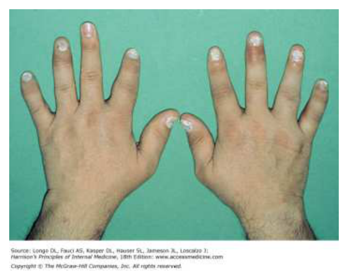
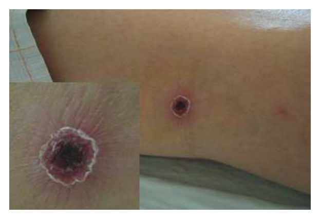
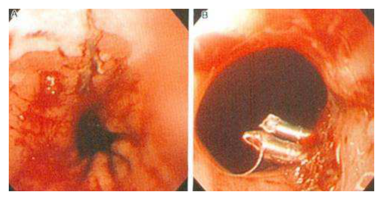
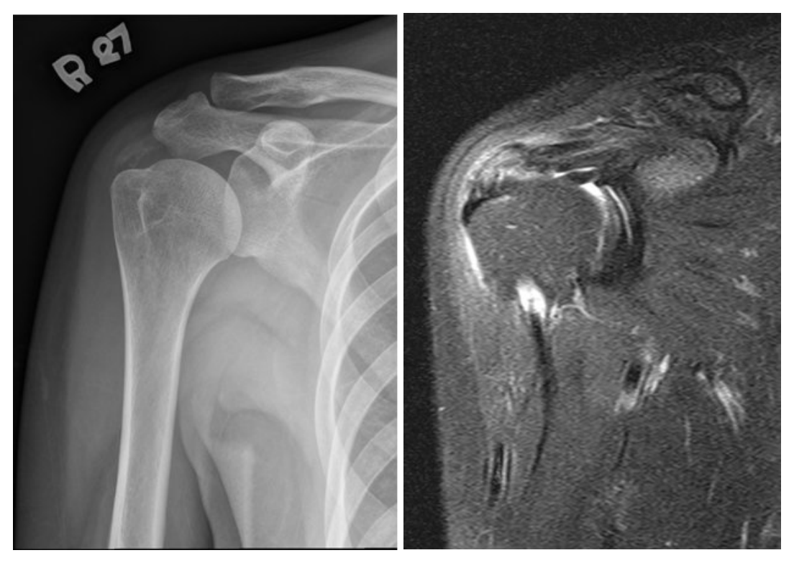
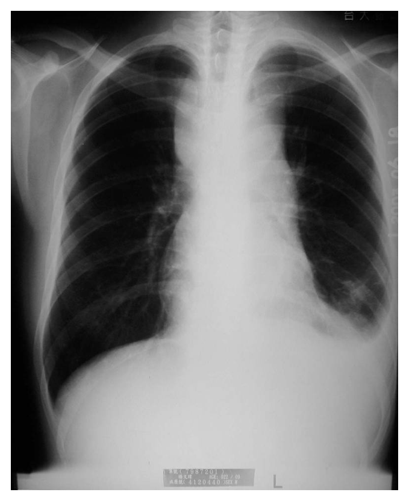
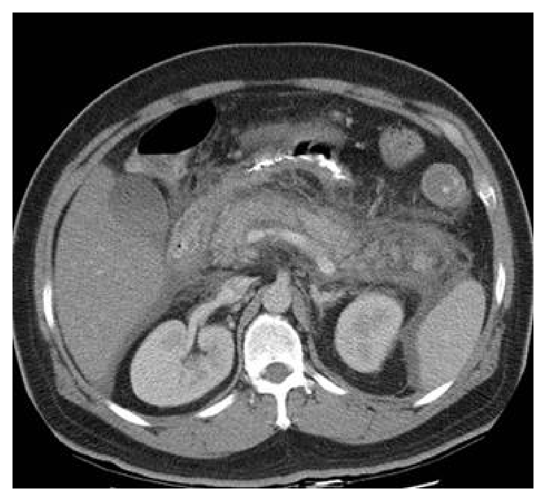
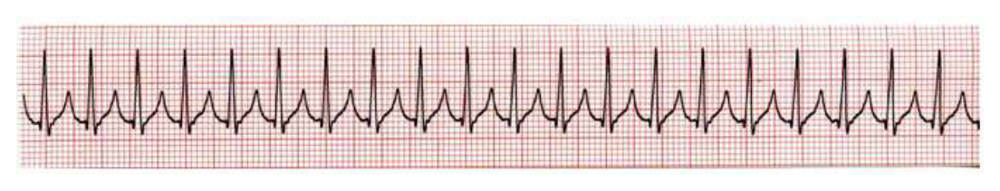

開卷有益 ／
醫師 ／ 醫學（三）（包括內科、家庭醫學科等科目及其相關臨床實例與醫學倫理） ／ 106 年第 2 次106 年第 2 次醫師醫學（三）（包括內科、家庭醫學科等科目及其相關臨床實例與醫學倫理）試題與答案
這一頁是民國 106 年第 2 次醫師醫學（三）（包括內科、家庭醫學科等科目及其相關臨床實例與醫學倫理）的整份歷屆試題，共 80 題，題目與標準答案出自考選部「國家考試試題及測驗式試題答案」開放資料，其中 80 題附有詳解。以下逐題列出題幹、選項與答案；要計時作答或記錄成績，請用線上練習。
考選部原始場次代碼：106080
線上作答這一科 →
全部 80 題
第 1 題
一位病人血液氣體分析顯示pH 7.51，PaCO2 49 mmHg，HCO3- 38 mmol/L，下列何者正確？
（A） 代謝性酸中毒（酸血症）（B） 代謝性鹼中毒（C） 呼吸性酸中毒（D） 呼吸性鹼中毒答案：（B）
詳解與考點 正解：pH 7.51 的鹼血症，且 HCO3- 38 mmol/L 明顯上升，先指向原發性代謝性鹼中毒。代謝性鹼中毒的呼吸代償可估為 PaCO2=0.7 ×（38-24）＋40=49.8 mmHg；實測 PaCO2 49 mmHg，與適當的二氧化碳滯留代償相符，故選 B。
A：代謝性酸中毒應以 HCO3- 降低及 pH 下降為主，與本題 HCO3- 升高、pH 為鹼血症的方向相反。
C：呼吸性酸中毒的原發改變是 PaCO2 上升並造成酸血症；本題雖有 PaCO2 偏高，卻是對 HCO3- 上升的代償，而非主因。
D：呼吸性鹼中毒應見 PaCO2 降低；本題 PaCO2 升高，故不符。
本題考點：酸鹼判讀（acid-base interpretation）——先由 pH 判斷酸血症或鹼血症，再辨認與 pH 同方向改變的原發變數；代謝性鹼中毒（metabolic alkalosis）的呼吸代償為 PaCO2 上升。
第 2 題
90歲的林奶奶患有血管性的失智症，近日來日夜顛倒，晚上無法睡覺，常常想要開門出去，外勞有時都拉不住，家人感到非常無助，來到門診尋求幫忙。下列有關失智症的敘述，何者正確？
（A） 血管性的失智症是最常見的失智症（B） 血管性的失智症可能來自於多次中風或大腦白質病變（C） 初期失智症的病人一定會有記憶力喪失（D） 失智症的病人如果有行為症狀，需要開立抗精神藥物，不需要行為治療答案：（B）
詳解與考點 正解：血管性失智症的病因與照護。腦部多次梗塞或慢性小血管病變造成白質損傷，都可累積成血管性認知障礙，故選 B。
A：阿茲海默症（Alzheimer disease）才是最常見的失智症病因；血管性失智症雖常見，並非最常見。
C：失智症早期不一定先以記憶喪失表現，例如額顳葉失智症可先出現人格、行為或語言改變；這個選項看似符合阿茲海默症，卻不能套用到所有失智症。
D：遊走、日夜顛倒等行為心理症狀應先評估疼痛、感染、環境刺激與照顧方式，採非藥物行為及環境介入；抗精神病藥僅在特定嚴重情況審慎使用，不能取代行為治療。
本題考點：血管性失智症（vascular dementia）——可由多發性腦中風或腦小血管白質病變造成；失智症的行為心理症狀（behavioral and psychological symptoms of dementia, BPSD）優先採非藥物處置。
第 3 題
65歲女性，過去僅有糖尿病的病史，第一次被診斷為高血壓，因為收縮壓在190～200 mmHg之間，由門診轉到急診，沒有任何不舒服，過去病人不知道自己有高血壓，下列何者處理欠佳？
（A） 請病人稍作休息，再量一次血壓（B） 詢問過去病史及家族病史（C） 馬上給予舌下短效nifedipine降壓（D） 注意有無神經學的變化答案：（C）
詳解與考點 正解：收縮壓 190～200 mmHg、但沒有症狀或已知急性器官損傷，處置重點是確認血壓、評估是否有高血壓急症，並避免過快降壓。舌下短效 nifedipine 的降壓幅度與速度難以預測，可能使腦、心或腎灌流突然降低，故為欠佳處置，選 C。
A：安靜休息後以正確方式複測血壓，可排除緊張、疼痛或量測誤差造成的暫時性升高，是合理的第一步。
B：詢問既往病史、用藥與家族病史，有助辨認慢性高血壓、次發性原因及心血管危險因子，屬適當評估。
D：神經學變化可能提示腦中風或高血壓腦病等急性標的器官損傷；即使病人目前無不適，仍應主動評估。
本題考點：嚴重無症狀高血壓（severe asymptomatic hypertension）與高血壓急症（hypertensive emergency）的區分；降血壓治療須避免過快、不可預測的血壓下降，以維持器官灌流。
第 4 題
70歲女性，因雙側下肢水腫，氣促，呼吸困難來門診就醫，身體診察發現雙側肺囉音，心音發現S3 gallop，心臟超音波顯示左心室射出分率為55%，輕度二尖瓣及三尖瓣逆流合併舒張功能不良，有關下列敘述何者錯誤？
（A） B-type natriuretic peptide（BNP）或者N-terminal pro-BNP可做為評估疾病嚴重度的指標（B） 飲食的衛教方面應該限鹽（C） 使用angiotensin-converting enzyme inhibitor已被證明對於此類病患長期的預後有幫助，應即刻開始使用（D） 使用利尿劑改善症狀並控制好血壓是治療病患的首選做法答案：（C）
詳解與考點 正解：肺鬱血、S3、射出分率 55% 與舒張功能不良，符合保留射出分率心衰竭（heart failure with preserved ejection fraction, HFpEF）。ACE inhibitor 可因合併高血壓、糖尿病或其他適應症使用，但不能僅因 HFpEF 就宣稱已證明可改善長期預後而應立即開始，故錯誤的是 C。
A：BNP 或 NT-proBNP 反映心室壁張力與鬱血程度，可協助心衰竭診斷及風險、嚴重度評估，敘述正確。
B：限鹽可減少體液滯留，為心衰竭衛教的重要方向，敘述正確。
D：有水腫與肺鬱血時，利尿劑可改善鬱血症狀；同時妥善控制血壓是 HFpEF 治療核心，敘述正確。
本題考點：保留射出分率心衰竭（HFpEF）——診斷結合心衰竭症狀、保留 EF 與舒張功能異常；鬱血以利尿劑改善，並處理血壓等共病。
第 5 題
胡先生62歲患有 病、高血壓於心臟科門診追蹤治療，主訴兩小時前開始嚴重上腹悶痛合併冒冷汗及嘔吐，在急診測得之心跳每分鐘約為52下，血壓為80/50 mmHg，頸靜脈鼓張，經診斷為急性心肌梗塞，下列何者心電圖變化最不可能和其診斷相關？
（A） ST elevation在lead II, III, aVF（B） ST depression在lead V1, V2（C） ST elevation在lead V4R（D） PR segment depression答案：（D）
詳解與考點 正解：上腹痛、冒冷汗、低血壓、頸靜脈鼓張與心搏過緩，強烈指向下壁心肌梗塞合併右心室梗塞。下壁梗塞可見（A）II、III、aVF ST elevation；右心室受累可見（C）V4R ST elevation；後壁受累則可使（B）V1、V2 出現互反性 ST depression。PR segment depression 則較代表心包膜發炎，與此梗塞型態最不相關，故選 D。
A：II、III、aVF 是下壁導程，下壁心肌梗塞的典型變化即為 ST elevation，與臨床表現相符。
B：後壁心肌梗塞在前胸導程可表現為 ST depression；它看似是缺血的非特異變化，但在下壁梗塞情境中可為後壁受累的鏡像表現。
C：右側胸前導程 V4R 的 ST elevation 支持右心室梗塞，可解釋低血壓與頸靜脈鼓張。
本題考點：下壁與右心室心肌梗塞（inferior and right ventricular myocardial infarction）——下壁導程為 II、III、aVF，右心室受累可在 V4R 顯示 ST elevation；PR segment depression 常見於急性心包膜炎（acute pericarditis）。
第 6 題
陳小姐被發現有意識不清及黃疸而被送到急診就醫，檢查結果為total bilirubin：7.2 mg/dL（正常值：0.2～1.6mg/dL）、direct bilirubin：4 mg/dL（正常值：0～0.3 mg/dL）、AST：478 U/L（正常值：5～45 U/L）、ALT：356 U/L（正常值：0～40 U/L）、alkaline phosphatase：102 U/L（正常值：10～100 U/L）、prothrombin time（INR）：3.1、albumin：3.6 g/dL（正常值：4.3～5.4 g/dL），下列之敘述何者錯誤？
（A） 此病患可能發生hepatocellular jaundice（B） 腹部超音波檢查膽管應無異常（C） 此病患黃疸的病因，可能包括virus, autoimmune, toxin and metabolic disorder等（D） 此病人之最可能病因為急性膽管炎答案：（D）
詳解與考點 正解：AST、ALT 明顯上升而 alkaline phosphatase 幾近正常，合併黃疸、INR 3.1 與意識不清，屬嚴重肝細胞損傷；若無既有肝病且確認意識不清為肝性腦病變，才符合急性肝衰竭。急性膽管炎通常是膽道阻塞合併感染，較應呈現膽汁鬱積型檢驗異常與相應臨床表現，不能由本題支持為最可能病因，故錯誤的是 D。
A：轉胺酶顯著升高且直接膽紅素上升，符合肝細胞性黃疸（hepatocellular jaundice）的型態。
B：本題 alkaline phosphatase 沒有顯著升高，較不支持大型膽管阻塞，故預期腹部超音波不見膽管擴張。
C：病毒性肝炎、自體免疫性肝炎、毒物性肝損傷與代謝性疾病都可造成肝細胞性肝炎或急性肝衰竭，為合理鑑別。
本題考點：肝細胞性黃疸（hepatocellular jaundice）——以 AST、ALT 顯著上升為特徵；急性肝衰竭（acute liver failure）可表現為凝血異常與肝性腦病變，須與膽汁鬱積型疾病區分。
第 7 題
黃先生，60歲，經腹部電腦斷層、腹部血管攝影及肝臟切片檢查後確診為肝癌，下列敘述何者錯誤？
（A） 手術切除對於小於5公分之單發性肝癌，是一種根除性（curative）的治療方法（B） 肝腫瘤電燒治療對於小於3公分之單發性肝癌，治療成效良好（C） 對於多發性肝癌，栓塞治療（trans-arterial embolization therapy, TAE）只會增加病患死亡率，不宜考慮（D） 肝癌術後追蹤應包括腹部超音波及血中甲種胎兒蛋白（α-fetoprotein）檢查答案：（C）
詳解與考點 正解：多發性肝癌的治療選擇。經動脈栓塞治療可針對以肝動脈供血為主的腫瘤，對不適合切除、但肝功能與全身狀況仍適合介入治療的病人可作為局部治療選項；不能說只會增加死亡率而一律不宜考慮，故選 C。
A：小於 5 cm 的單發肝癌，若肝功能與殘存肝容量適合，手術切除可採根除性治療，敘述正確。
B：小於 3 cm 的單發肝癌常可考慮局部消融治療，例如射頻燒灼；這個選項看似不如手術徹底，但在合適病人確有良好局部控制效果。
D：肝癌復發風險高，術後以腹部影像與 α-fetoprotein 追蹤是合理作法，敘述正確。
本題考點：肝細胞癌（hepatocellular carcinoma, HCC）的分期治療——可切除小型單發腫瘤採手術或局部消融；多發或不可切除病灶可依肝功能考慮肝動脈導向治療（transarterial therapy）。
第 8 題
一位25歲女性病人被診斷為全身性紅斑性狼瘡（systemic lupus erythematosus, SLE），最近一次驗尿之RBC為50～75/HPF（high power field），每日尿蛋白為3.2公克，血中肌酸酐（creatinine）3個月內，由1.2mg/dL上升至2.4 mg/dL，下列敘述何者錯誤？
（A） 腎病理切片最可能是瀰漫增生性腎絲球腎炎（diffuse proliferative glomerulonephritis）（B） 給予靜脈脈衝類固醇治療（pulse steroid therapy）（C） 給予細胞毒性藥物如cyclophosphamide，此藥亦可用脈衝治療方式給予（D） anti-double-stranded DNA抗體檢驗值的高低不可以當狼瘡腎炎活性的指標答案：（D）
詳解與考點 正解：SLE 合併血尿、大量蛋白尿與 3 個月內肌酸酐倍增，代表活動性嚴重狼瘡腎炎。anti-double-stranded DNA 抗體上升常與疾病活動度，尤其腎炎活動性相關，可作為追蹤時的輔助指標，故「不可以當指標」為錯誤敘述，選 D。
A：瀰漫增生性狼瘡腎炎常呈現明顯血尿、蛋白尿與快速腎功能惡化，是嚴重增生型病變中最典型的配對；但仍須腎臟切片確認分型與活動度，不能僅以臨床表現定型。
B：嚴重活動性狼瘡腎炎常以高劑量類固醇誘導治療，靜脈脈衝類固醇是可採用的方式。
C：cyclophosphamide 可作為嚴重狼瘡腎炎的誘導免疫抑制治療，並可採間歇靜脈脈衝方式投與，敘述正確。
本題考點：狼瘡腎炎（lupus nephritis）——血尿、蛋白尿與腎功能惡化提示活動性腎炎，腎切片用於分型；anti-dsDNA antibody 與補體（complement）可輔助評估疾病活動性。
第 9 題
一位45歲男性病人有慢性C型肝炎病史，因尿中泡沫多及水腫且體重增加5公斤而來求診，其24小時尿蛋白流失為5公克，血中白蛋白（albumin）為 2.4 g/dL，血中補體（complement）濃度下降，下列敘述何者錯誤？
（A） 其蛋白尿程度已達腎病症候群之標準（B） 病人血液中常出現冷凝蛋白（cryoglobulin）（C） 較易出現腎動脈栓塞（D） 若做腎臟穿刺，病理診斷最可能是MPGN（membranoproliferative glomerulonephritis）答案：（C）
詳解與考點 正解：慢性 C 型肝炎、低補體、腎病症候群與最可能的 MPGN，典型聯想為混合型冷凝球蛋白血症相關腎炎。腎病症候群造成高凝狀態時較典型的腎血管併發症是腎靜脈血栓，而非腎動脈栓塞，故 C 錯誤。
A：24 小時尿蛋白 5 g 已超過腎病症候群的蛋白尿範圍，且合併低白蛋白與水腫，敘述正確。
B：慢性 C 型肝炎可與混合型冷凝球蛋白血症相關，血中出現 cryoglobulin 是重要線索。
D：C 型肝炎相關冷凝球蛋白血症的典型腎病理為膜增生性腎絲球腎炎（MPGN），與低補體相符。
本題考點：腎病症候群（nephrotic syndrome）——大量蛋白尿、低白蛋白血症與水腫，並增加血栓風險；C 型肝炎相關冷凝球蛋白血症（cryoglobulinemia）常伴低補體與 MPGN。
第 10 題
一位61歲罹患乾癬症的病患，在7年之後，兩側手指逐漸腫脹有如香腸指，又遠端指間關節有發炎反應，且指甲變厚易脆（如附圖），最有可能的診斷為何？

（A） osteoarthritis（B） rheumatoid arthritis（C） fungal infection（D） psoriatic arthritis答案：（D）
詳解與考點 正解：病患有既往乾癬，合併圖中可見的多指整體瀰漫性腫脹（香腸指，dactylitis）、遠端指間關節發炎，以及指甲增厚、脆裂等乾癬甲變化，為乾癬性關節炎（psoriatic arthritis）的典型表現，故選 D。
A：osteoarthritis 是退化性關節炎，常侵犯遠端指間關節而形成骨性結節，但以使用後疼痛、骨性增生為主，不會造成整根手指的香腸狀瀰漫腫脹，也無法解釋乾癬及典型甲病變。
B：rheumatoid arthritis 常對稱侵犯手部掌指關節與近端指間關節，遠端指間關節通常不受累；雖可有慢性關節腫痛，卻較不會出現香腸指與乾癬甲變化，關節分布及臨床背景均不符。
C：fungal infection 可造成指甲變厚、變色或易碎，容易與乾癬甲病變混淆；但黴菌感染不能合理解釋多根手指的香腸狀腫脹與遠端指間關節發炎，不能作為整體診斷。
本題考點：乾癬性關節炎（psoriatic arthritis）常見香腸指（dactylitis）、遠端指間關節炎（distal interphalangeal joint arthritis）與乾癬甲病變（nail psoriasis）；須與退化性關節炎及類風濕性關節炎的關節分布區別。
第 11 題
一位62歲病人，過去有心臟病史，正在接受治療，最近因出血傾向接受檢查，周邊血中血紅素、白血球及血小板數正常，prothrombin time（PT）INR 3.5，activated partial thromboplastin time 26”（正常對照27”）。下列何者是引起這位病人容易出血的最可能原因？
（A） coumadin treatment（B） heparin treatment（C） liver disease（D） von Willebrand disease答案：（A）
詳解與考點 正解：PT-INR 3.5 顯著延長、aPTT 接近正常，且病人有心臟病正接受治療。warfarin（coumadin）抑制維生素 K 依賴凝血因子的活化，PT/INR 對其影響最敏感，因此最能解釋此凝血檢驗型態與出血傾向，故選 A。
B：heparin 主要使 aPTT 延長；本題 aPTT 26 秒接近正常，與 heparin 效應不符。
C：嚴重肝病可因多種凝血因子合成下降而延長 PT，晚期也常影響 aPTT，且題幹的心臟病治療線索更支持抗凝藥物。
D：von Willebrand disease 主要影響初級止血，常見黏膜出血；PT 通常正常，無法解釋 INR 3.5。
本題考點：凝血檢驗（coagulation tests）——PT/INR 主要評估外在與共同路徑，並監測 warfarin；aPTT 主要用於監測 unfractionated heparin。
第 12 題
一位40歲亞裔女性病人，沒有抽過菸，最近被診斷為非小細胞肺癌第四期，腫瘤有EGFR（epidermal growthfactor receptor）基因突變（exon 19 deletion），下列何種治療最為合適？
（A） EGFR抑制劑（B） EGFR抑制劑+化學治療（C） 血管增生抑制抗體（D） EGFR抑制劑+血管增生抑制抗體答案：（A）
詳解與考點 正解：晚期非小細胞肺癌具有 EGFR exon 19 deletion，這是可預測對 EGFR tyrosine kinase inhibitor 反應的驅動基因變異。無論其不吸菸、亞裔女性的臨床特徵多麼典型，治療選擇的關鍵仍是已檢出的 EGFR 突變，因此選 EGFR 抑制劑，故選 A。
B：依本題 2017 年命題脈絡，單用 EGFR tyrosine kinase inhibitor 是預期答案；現行治療已有 EGFR 抑制劑合併含鉑化學治療等第一線方案，實務選擇須依藥物、病人狀況與治療目標個別化。
C：血管新生抑制抗體可在特定非小細胞肺癌情境使用，但不如針對已知 EGFR 驅動變異的標靶治療具直接性。
D：合併 EGFR 抑制劑與血管新生抑制抗體並非此題所問的最合適基本治療選擇，不能取代單用 EGFR 標靶治療的核心原則。
本題考點：驅動基因變異（driver mutation）與精準治療（precision therapy）——EGFR exon 19 deletion 的轉移性非小細胞肺癌適用 EGFR tyrosine kinase inhibitor。
第 13 題
有關氣喘（bronchial asthma）的敘述，下列何者正確？
（A） 吸入型類固醇（inhaled corticosteroid）的廣泛使用是近年來氣喘病患死亡率減少的主因之一（B） 氣喘（bronchial asthma）的定義（definition）很容易達成共識，診斷也容易與其他疾病區隔分開（C） 氣喘（bronchial asthma）病患的氣道黏膜（airway mucosa）發炎，主要是有白血球（neutrophils），B淋巴球（B-lymphocytes）和肥胖細胞（mast cells）浸潤造成（D） 氣喘控制不良（poor control of bronchial asthma）的最主要原因是短效支氣管擴張劑（bronchodilators）不規則使用答案：（A）
詳解與考點 正解：近年氣喘死亡率下降的主要可介入因素。吸入型類固醇能抑制慢性氣道發炎、降低嚴重急性惡化與死亡風險，其普及使用被視為氣喘死亡率改善的重要原因之一，故選 A。
B：氣喘是由可變動呼吸症狀與可變動吐氣氣流受限構成的臨床診斷，仍須與 COPD、心衰竭及上呼吸道疾病鑑別，不能說定義與鑑別都很容易。
C：典型氣喘氣道發炎以 eosinophils、mast cells 與 T lymphocytes 等免疫反應為主；選項把 neutrophils 與 B lymphocytes 說成主要浸潤細胞，過度簡化且不符典型表型。
D：控制不良常與未規則使用抗發炎控制藥、吸入技巧不佳、暴露與共病有關，不是短效支氣管擴張劑使用不規則所致。
本題考點：氣喘（bronchial asthma）——慢性氣道發炎導致可變動氣流受限；吸入型類固醇（inhaled corticosteroid, ICS）是控制氣道發炎、降低惡化風險的基礎治療。
第 14 題
28歲婦女產下健康男嬰2個月後，因體重增加、倦怠、怕冷、便秘來就診，目前仍哺乳中。病人自訴產前體檢皆為正常，但產後感覺力不從心，身體檢查除臉部圓大、皮膚略微乾燥外並無特殊發現。血壓150/100 mmHg（產前120/80 mmHg），脈搏60/min 規則，抽血檢查Na：132 mM，K：3.5 mM，Ca：2.3 mM。下列那項檢查最具診斷價值：
（A） ACTH，cortisol（B） Blood glucose（C） freeT4，hsTSH（D） 憂鬱量表答案：（C）
詳解與考點 正解：產後 2 個月出現體重增加、倦怠、怕冷、便秘、皮膚乾燥與心搏偏慢，為甲狀腺功能低下的典型群聚線索。free T4 可確認循環甲狀腺素是否降低，hsTSH 可區分原發性與中樞性甲狀腺功能低下，兩者最具診斷價值，故選 C。
A：ACTH 與 cortisol 用於評估腎上腺軸；低鈉可見於腎上腺功能不足，但本題的怕冷、便秘與乾燥皮膚更直接指向甲狀腺低下。
B：血糖可作為一般代謝評估，但無法直接證實或排除本題最可能的甲狀腺功能異常。
D：產後憂鬱可造成倦怠與情緒症狀，但不能解釋怕冷、便秘、皮膚乾燥與心搏變慢等生理線索；它看似符合產後疲憊，卻非最具診斷性的檢查。
本題考點：產後甲狀腺功能異常（postpartum thyroid dysfunction）——甲狀腺功能低下可出現怕冷、便秘、體重增加、皮膚乾燥與心搏變慢；free T4 與 TSH 是基本診斷檢驗。
第 15 題
有一位22歲女性因發燒及頭痛一週就醫，最近兩天全身有淡淡紅疹。病患自訴兩週前曾至蘭嶼旅遊三天。理學檢查在膕窩部位（popliteal area）有一黑色結痂病灶，無觸痛（如圖）。血液檢驗：白血球9,800/mm3（Band 16％，Seg 35％，Mono9％，Lymph 40％），血紅素13.2 g/dL，血小板195,000/mm3；GOT/GPT：154/180 IU/L；胸部X光、腹部超音波肝脾、尿液檢驗，皆無異常。此病人最可能之診斷？

（A） scrub typhus（B） drug allergy（C） chickenpox（D） measles答案：（A）
詳解與考點 正解：發燒、頭痛、淡紅疹、旅遊後發病，以及圖中膕窩可見中央黑褐色壞死性結痂、周圍紅暈的無痛性焦痂（eschar），合併肝指數上升，為恙蟲病（scrub typhus）的典型表現。恙蟎幼蟲叮咬可留下焦痂，病原為 Orientia tsutsugamushi，故選 A。
B：藥物過敏可造成發疹與發燒，但題幹未提供新用藥史，也無法以膕窩局部特徵性的黑色焦痂解釋；焦痂與旅遊暴露史反而指向恙蟲病。
C：水痘（chickenpox）的皮疹通常為不同時期並存的搔癢性水泡、丘疹與結痂，分布多以軀幹為主；圖中的單一無痛性黑色焦痂不是水痘皮疹的典型型態。
D：麻疹（measles）常有咳嗽、流鼻水、結膜炎及由臉部向下蔓延的斑丘疹，口腔可見 Koplik spots；本題無此典型前驅症狀，且局部焦痂與麻疹不符。
本題考點：恙蟲病（scrub typhus）——恙蟎叮咬後的焦痂（eschar）是重要臨床線索；立克次體相關感染（rickettsial infection）可表現為發燒、頭痛、皮疹與肝功能異常；旅遊及環境暴露史有助於感染症鑑別診斷。
第 16 題
78歲女性患有高血壓、慢性腎功能不全、陳舊性中風，長期使用導尿管，居住在慢性養護機構；因發高燒兩天，消化不佳，解黑便及意識不清，住院治療。經檢查發現血液和尿液培養皆長出：具有廣效乙內醯胺酵素（extended-spectrum beta-lactamase，ESBL）之大腸桿菌（Escherichia coli），下列抗生素藥物治療及投與途徑，何者最適合用於治療初期？
（A） oral cephalexin（B） intravenous cefotaxime（C） intravenous ertapenem（D） intramuscular gentamicin答案：（C）
詳解與考點 正解：血液與尿液皆培養出 ESBL-producing E. coli，且病人有高燒、意識不清，須以能可靠涵蓋 ESBL 菌血症的靜脈抗生素做初期治療。ertapenem 為 carbapenem 類，對 ESBL 產生菌通常具穩定活性，靜脈投與適合嚴重全身性感染，故選 C。
A：oral cephalexin 為口服第一代 cephalosporin，易受 ESBL 水解，且不適合此嚴重菌血症的初期治療。
B：cefotaxime 為第三代 cephalosporin，雖看似抗菌範圍較廣，但 ESBL 可使其失效，不能作為已知 ESBL 菌感染的可靠選擇。
D：gentamicin 對部分革蘭陰性菌可能有活性，但病人有慢性腎功能不全，胺基醣苷類的腎毒性與監測需求使其不適合作為此情境的單獨初期首選。
本題考點：廣效乙內醯胺酶（extended-spectrum beta-lactamase, ESBL）——可使多種 cephalosporin 失效；嚴重 ESBL-producing Enterobacterales 感染通常以 carbapenem 類作初期治療。
第 17 題
有關呼吸困難（dyspnea）之敘述，下列何者錯誤？
（A） 焦慮不會引起呼吸困難（B） 呼吸困難是一種主觀上對呼吸不順暢的感覺（C） 呼吸困難的原因甚多，包括心衰竭或呼吸道阻塞（D） 病人的呼吸困難，且伴隨著夜間陣發性呼吸困難（paroxysmal nocturnal dyspnea），其原因可能是心衰竭所致答案：（A）
詳解與考點 正解：題目問「何者錯誤」。呼吸困難是主觀的呼吸不適感，除心肺疾病外，焦慮與恐慌可透過過度換氣、胸悶及對呼吸感覺的放大而引發或加劇症狀，因此「焦慮不會引起」為錯誤敘述，選 A。
B：呼吸困難（dyspnea）的定義即為個人主觀感受到的呼吸不適，其嚴重度不必然與客觀氧合或肺功能數值完全一致，敘述正確。
C：心衰竭、氣道阻塞、肺部疾病、貧血與焦慮等皆可造成呼吸困難，病因確實很多，敘述正確。
D：夜間陣發性呼吸困難常見於左心衰竭；平躺後靜脈回流增加使肺鬱血加重，可使病人夜間因呼吸困難醒來，敘述正確。
本題考點：呼吸困難（dyspnea）——是主觀症狀，病因包含心臟、肺部、血液與心理因素；夜間陣發性呼吸困難（paroxysmal nocturnal dyspnea）是心衰竭的重要線索。
第 18 題
有關水腫之敘述，何者正確？
（A） 肝硬化引起水腫常伴隨頸靜脈曲張（B） 單側下肢水腫常是因為靜脈或淋巴阻塞（C） 血中蛋白質降低如nephrotic syndrome，不會引起臉或眼皮水腫（D） 典型心衰竭引起的水腫，大致上和dependent sites無關答案：（B）
詳解與考點 正解：水腫分布能指向局部或全身性機轉。單側下肢水腫較提示局部靜脈回流受阻或淋巴阻塞，例如深部靜脈血栓或淋巴水腫，故選 B。
A：肝硬化的腹水與下肢水腫主要和門脈高壓、低白蛋白及腎鈉水滯留有關；頸靜脈怒張較指向右心衰竭或心包膜疾病，並非肝硬化典型伴隨徵象。
C：腎病症候群的低白蛋白血症降低血漿膠體滲透壓，常可造成眼瞼及臉部水腫，尤其清晨明顯，故「不會」錯誤。
D：典型心衰竭的水腫會受重力影響而出現在 dependent sites，例如可行走者的腳踝與臥床者的薦骨部，與選項相反。
本題考點：水腫（edema）的分布判讀——單側肢體水腫優先想局部靜脈或淋巴阻塞；低白蛋白血症造成全身性水腫；心衰竭水腫常見於下垂部位（dependent edema）。
第 19 題
依據美國內科醫學會（The American Board of Internal Medicine）與歐洲內科醫學會（The EuropeanFederation of Internal Medicine）於2002年提出之醫師憲章（Physician Charter）。下列何者不是醫師專業素養之基本原則？
（A） 病人福祉優先原則（principle of primacy of patient welfare）（B） 社會正義原則（principle of social justice）（C） 實證醫學執業原則（principle of evidence-based practice）（D） 病人自主原則（principle of patient autonomy）答案：（C）
詳解與考點 正解：Physician Charter 所列「基本原則」的固定三項：病人福祉優先、病人自主與社會正義。實證醫學執業雖是重要的專業實踐方式，但不在該憲章三項基本原則之列，故選 C。
A：病人福祉優先原則（principle of primacy of patient welfare）是 Physician Charter 的基本原則之一，敘述正確。
B：社會正義原則（principle of social justice）是 Physician Charter 的基本原則之一，要求公平分配醫療資源與避免歧視，敘述正確。
D：病人自主原則（principle of patient autonomy）是 Physician Charter 的基本原則之一，敘述正確。
本題考點：醫師專業素養（medical professionalism）——醫師憲章（Physician Charter）的三項基本原則為病人福祉優先、病人自主與社會正義；實證醫學（evidence-based practice）重要但非此三項之一。
第 20 題
下列有關風濕性心臟病合併僧帽瓣狹窄的敍述，何者錯誤？
（A） 正常僧帽瓣的開口大小為 4～6 cm2，若<1 cm2為重度狹窄（B） 常合併心房纖維顫動（C） 常合併次發性肺高壓（D） 聽診常發現高音舒張期雜音（high pitched early diastolic murmur）答案：（D）
詳解與考點 正解：風濕性僧帽瓣狹窄的典型聽診音。僧帽瓣狹窄的血流在舒張期跨越狹窄瓣口，常產生低頻、隆隆樣的中舒張期雜音，並可有 opening snap；高音調早期舒張期雜音較符合主動脈瓣逆流，故 D 錯誤。
A：正常僧帽瓣口面積約 4～6 cm2，嚴重僧帽瓣狹窄可小於 1 cm2，敘述正確。
B：慢性左心房壓力與擴張增加心房纖維顫動風險，為僧帽瓣狹窄的常見併發症，敘述正確。
C：長期左心房壓上升可傳遞至肺靜脈與肺循環，因而合併次發性肺高壓，敘述正確。
本題考點：僧帽瓣狹窄（mitral stenosis）——常由風濕性心臟病造成，典型為 opening snap 與低頻中舒張期隆隆樣雜音；可導致心房纖維顫動與肺高壓。
第 21 題
下列有關頸靜脈壓力測量的敍述，何者錯誤？
（A） 通常以右外頸靜脈（external jugular vein）測量最適當（B） “a”波代表右心房收縮波型（C） “c”波代表右心室收縮後，三尖瓣關閉（D） 三尖瓣閉鎖不全會使“v”波變大答案：（A）
詳解與考點 正解：頸靜脈壓須準確反映右心房壓。右內頸靜脈與上腔靜脈、右心房的解剖連續性較佳，波形也較容易觀察，因此通常是測量頸靜脈壓的首選；右外頸靜脈較不可靠，故 A 錯誤。
B：a 波代表右心房收縮造成的壓力上升，為正常頸靜脈波形組成，敘述正確。
C：c 波發生於右心室收縮初期，與三尖瓣向右心房膨出相關，敘述正確。
D：三尖瓣閉鎖不全時，右心室收縮的血液逆流入右心房，會使 v 波明顯增大，敘述正確。
本題考點：頸靜脈壓（jugular venous pressure, JVP）——以右內頸靜脈最適合估計右心房壓；a wave 為心房收縮，c wave 與心室收縮初期的三尖瓣膨出相關，v wave 增大提示三尖瓣逆流。
第 22 題
下列有關二尖瓣脫垂的敍述，何者錯誤？
（A） 常見的病理變化為瓣膜呈現myxomatous change，好發於後葉瓣膜（B） 好發於Marfan syndrome病患（C） 好發於15～30歲的男性（D） 大部分病人臨床無特別症狀，無須特別治療答案：（C）
詳解與考點 正解：二尖瓣脫垂的流行病學。二尖瓣脫垂常見於年輕女性，並非好發於 15～30 歲男性，因此 C 為錯誤敘述。
A：二尖瓣脫垂常見黏液樣變性（myxomatous change），後葉較常受累，敘述正確。
B：Marfan syndrome 的結締組織異常會增加二尖瓣脫垂機率，敘述正確。
D：多數二尖瓣脫垂病人沒有明顯症狀，若無重要二尖瓣逆流或併發症，通常以追蹤而非特別治療為主，敘述正確。
本題考點：二尖瓣脫垂（mitral valve prolapse, MVP）——常與瓣膜黏液樣變性及結締組織疾病相關；多數患者無症狀，但須評估是否合併二尖瓣逆流（mitral regurgitation）。
第 23 題
一位55歲男性，有糖尿病病史，發生胸悶症狀約5小時來到急診，血壓140/100 mmHg，心跳每分鐘80次，經抽血及心電圖診斷為ST節段上升之心肌梗塞（ST-segment elevation myocardial infarction），有關此患者的治療，下列敘述何者錯誤？
（A） 鈣離子阻斷劑在急性期可以緩解病患的症狀，特別是短效dihydropyridines類的鈣離子阻斷劑（B） 如果沒有絕對禁忌症，應給予aspirin 160～325 mg（C） 如果沒有禁忌症（如低血壓或曾服用phosphodiesterase-5 inhibitor），可以嘗試使用舌下含片nitroglycerin來緩解病患的症狀（D） 如果沒有禁忌症，可給予靜脈注射或者口服的乙型交感神經阻斷劑（β-blockers）答案：（A）
詳解與考點 正解：題幹關鍵是急性 ST 節段上升心肌梗塞的急性期處置；短效 dihydropyridine 類鈣離子阻斷劑會造成反射性交感活化與心跳加快，可能增加心肌耗氧，不能作為此時的常規緩解治療，故錯誤的是 A。
B：無絕對禁忌症時，應儘早給予 aspirin 抗血小板治療；160～325 mg 為急性期常用的負荷劑量範圍，敘述正確，故非答案。
C：nitroglycerin 可改善缺血性胸痛；但低血壓或近期使用 phosphodiesterase-5 inhibitor 時可能引起嚴重低血壓，題幹已列出禁忌症，因此敘述正確。
D：無禁忌症時，β-blocker 可降低心率與心肌耗氧；急性期須依血流動力學狀態選擇靜脈或口服給藥，敘述方向正確。
本題考點：ST 節段上升心肌梗塞（ST-segment elevation myocardial infarction, STEMI）的急性藥物處置；短效二氫吡啶類鈣離子阻斷劑（short-acting dihydropyridine calcium channel blocker）可能引起反射性心搏過速；抗血小板治療（antiplatelet therapy）與硝酸鹽（nitrate）的禁忌症。
第 24 題
有關心臟瓣膜置換或修補手術的死亡率，下列何者錯誤？
（A） 主動脈瓣膜置換手術死亡率比二尖瓣（僧帽瓣）置換手術高（B） 瓣膜置換手術加上冠狀動脈繞道手術比單純瓣膜置換手術死亡率高（C） 多瓣膜置換手術比單一瓣膜置換手術死亡率高（D） 二尖瓣（僧帽瓣）修補手術死亡率較二尖瓣置換手術死亡率低答案：（A）
詳解與考點 正解：題目比較各類瓣膜手術死亡率；手術風險取決於病人狀態、手術複雜度與是否合併其他手術，不能概括說主動脈瓣置換必定比二尖瓣置換死亡率高。相較之下，二尖瓣病變常伴較複雜的病人與手術條件，因此 A 的一概而論錯誤。
B：瓣膜置換再加冠狀動脈繞道手術，手術時間、操作範圍與共病負荷通常增加，死亡風險會高於單純瓣膜置換，敘述正確。
C：多瓣膜置換比單一瓣膜置換涉及較廣泛手術與較高複雜度，周手術期風險通常較高，敘述正確。
D：若病灶適合修補，保留二尖瓣原有結構與功能通常優於置換，且一般手術死亡率較低，敘述正確。
本題考點：心臟瓣膜手術風險（valvular heart surgery risk）須整合手術複雜度與病人條件；合併冠狀動脈繞道手術（coronary artery bypass grafting, CABG）與多瓣膜手術會提高風險；二尖瓣修補（mitral valve repair）在可行時常優於置換。
第 25 題
30歲男性在大量喝酒後嘔吐，嘔吐物中有鮮血，接受胃鏡檢查及治療，結果在食道胃交接處有出血並做止血夾治療（如圖），其診斷最有可能為下列何者？

（A） esophageal varices（B） peptic ulcer（C） Mallory-Weiss tear（D） gastroesophageal reflux disease答案：（C）
詳解與考點 正解：大量飲酒後劇烈嘔吐，隨即出現鮮血性嘔吐，且胃鏡顯示食道胃交接處的線狀黏膜裂傷並以止血夾止血，最符合 Mallory-Weiss tear。反覆乾嘔會使腹內壓突然升高，造成胃賁門附近、食道胃交接處黏膜撕裂，導致上消化道出血；圖中止血夾即置於交接處的出血裂傷處，故選 C。
A：esophageal varices 是門脈高壓造成食道靜脈曲張破裂出血，胃鏡通常見食道內迂曲、隆起的擴張靜脈，而非位於食道胃交接處的局部黏膜裂傷；雖也可大量吐血，但病灶形態與本題不同。
B：peptic ulcer 多發生於胃或十二指腸的黏膜缺損，胃鏡可見潰瘍凹陷及其出血徵象；本題出血位置在食道胃交接處，且有嘔吐後發病的典型病史，不符合消化性潰瘍。
D：gastroesophageal reflux disease 是胃酸逆流引起的慢性食道症狀或食道炎，可有胸口灼熱、反酸與黏膜發炎；它不會因一次劇烈嘔吐而形成圖示需以止血夾處理的交接處急性裂傷。
本題考點：Mallory-Weiss tear（Mallory-Weiss 黏膜撕裂）是劇烈嘔吐、乾嘔後發生於食道胃交接處的縱向黏膜裂傷；上消化道出血（upper gastrointestinal bleeding）的內視鏡止血可使用止血夾（hemoclip）；須與食道靜脈曲張（esophageal varices）的隆起曲張靜脈及消化性潰瘍（peptic ulcer）的潰瘍性病灶鑑別。
第 26 題
下列有關膽酸（bile acid）的敘述，何者錯誤？
（A） 無法經食物攝取獲得（B） 由肝臟合成（C） 絕大部分在空腸（jejunum）再吸收（D） 原發性膽道肝硬化（primary biliary cirrhosis）患者因膽酸分泌發生問題而可能產生steatorrhea，甚至因此而導致鈣和維生素Ｄ的吸收不良答案：（C）
詳解與考點 正解：膽酸經腸肝循環回收的主要部位是末端迴腸（terminal ileum），不是空腸，因此 C 錯誤。空腸也可有少量吸收，但不是絕大部分膽酸再吸收的部位；這是本題以腸段名稱設下的誘答。
A：人體的初級膽酸由肝臟以膽固醇合成，並非可由一般食物直接取得膽酸作為主要來源，敘述正確。
B：膽酸在肝臟合成，再分泌至膽汁進入腸道參與脂肪消化，敘述正確。
D：原發性膽道肝硬化造成膽汁生成或排出障礙時，腸腔膽酸不足會影響脂肪吸收，因而可有脂肪便及脂溶性維生素吸收不良，敘述正確。
本題考點：腸肝循環（enterohepatic circulation）中膽酸主要於末端迴腸再吸收；膽酸（bile acid）由肝臟合成並促進脂肪吸收；膽汁鬱積（cholestasis）可造成脂肪便（steatorrhea）與脂溶性維生素缺乏。
第 27 題
引起猛爆性肝炎常見的原因，不包括下列何者？
（A） 藥物（B） A型肝炎（C） B型肝炎（D） 熬夜答案：（D）
詳解與考點 正解：猛爆性肝炎是急性大量肝細胞壞死導致的急性肝衰竭；病毒性肝炎與藥物性肝損傷均是重要病因，熬夜本身不是常見直接病因，故選 D。熬夜可能影響生活規律或既有疾病的照護，但不能用來解釋猛爆性肝炎的病因。
A：藥物或毒物可造成嚴重肝細胞損傷，是急性肝衰竭的重要病因之一，故非答案。
B：A 型肝炎多為自限性，但少數患者可發生猛爆性肝炎，故仍是可能病因。
C：B 型肝炎急性感染或嚴重急性惡化可引起猛爆性肝炎，故非答案。
本題考點：猛爆性肝炎（fulminant hepatitis）與急性肝衰竭（acute liver failure）的常見病因包括病毒性肝炎與藥物性肝損傷（drug-induced liver injury）；一般生活型態因素不是直接致病原因。
第 28 題
幽門螺旋桿菌（Helicobacter pylori）已知是部分消化道疾病的致病因子，下列何者除外？
（A） 胃食道逆流（reflux esophagitis）（B） 萎縮性胃炎（atrophic gastritis）（C） B細胞胃淋巴癌（B cell gastric lymphoma）（D） 十二指腸潰瘍（duodenal ulcer）本題送分，無標準答案
詳解與考點 本題官方公告送分。
第 29 題
一位42歲女性，主訴漸進性茶色尿、皮膚變黑且癢、無飲酒史、無長期中西藥服用史，身體診察顯示有黃疸、無腹部壓痛。初步血液檢查顯示：WBC：3800/mm3、Hb：11.8 g/dL、血小板：98000/mm3、ALT（GPT）：48 U/L、AST（GOT）：62 U/L、bilirubin（total/direct）：5.8/3.9 mg/dL、鹼性磷酸酶（alkalinephosphatase）：586 U/L（正常值＜100 U/L）、HBsAg：陰性、anti-HCV：陰性。下列何者不是適宜之檢查：
（A） 腹部超音波檢查（B） anti-mitochondrial antibody（C） serum ceruloplasmin（D） serum γ-GT答案：（C）
詳解與考點 正解：茶色尿、搔癢、直接膽紅素與鹼性磷酸酶顯著上升，合併中年女性與肝炎病毒陰性，首先要評估膽汁鬱積及原發性膽道疾病。serum ceruloplasmin 主要用於 Wilson disease 的評估，較典型於年輕患者的銅代謝異常，並非此一膽汁鬱積表現的適宜優先檢查，故選 C。
A：腹部超音波可先區分膽管擴張等肝外阻塞與肝內膽汁鬱積，對本例適宜。
B：anti-mitochondrial antibody 是原發性膽道膽管炎的重要血清學檢查；本例的年齡、性別與膽汁鬱積型肝功能異常使它看似特別吻合，且確實應檢查。
D：serum γ-GT 有助支持鹼性磷酸酶升高來自肝膽系統，適合用於本例的膽汁鬱積評估。
本題考點：膽汁鬱積型肝功能異常（cholestatic liver injury）的判讀；原發性膽道膽管炎（primary biliary cholangitis）常以 anti-mitochondrial antibody 協助診斷；ceruloplasmin 用於 Wilson disease 的銅代謝評估。
第 30 題
Ranson計分法是判定急性胰臟炎嚴重度很好的方法，最初48小時非用以計分之項目為：
（A） 住院後血比容（hematocrit）（B） 動脈血氧氣濃度（C） 血清鉀（D） 血清鈣答案：（C）
詳解與考點 正解：Ranson score 在入院後 48 小時的評分項目包括血比容下降、動脈血氧下降與血清鈣下降等；血清鉀不是其計分項目，故選 C。本題考的是固定的評分構成，而非一般急性胰臟炎可能出現的所有電解質異常。
A：住院後血比容下降超過 10% 為急性胰臟炎嚴重度的經驗性指標，是 Ranson 計分項目，故非答案。
B：動脈血氧降低是住院後 48 小時評分項目之一，反映可能的肺部併發症，故非答案。
D：血清鈣下降是住院後 48 小時的 Ranson 計分項目之一，故非答案。
本題考點：Ranson 計分（Ranson score）用於急性胰臟炎（acute pancreatitis）嚴重度評估；住院後 48 小時項目包括 hematocrit、PaO2 與 calcium 的變化；血清鉀不在此評分中。
第 31 題
下列何種腎臟替代療法為末期腎病之最佳治療（treatment of choice）？
（A） 血液透析（hemodialysis）（B） 腹膜透析（peritoneal dialysis）（C） 腎臟移植（kidney transplantation）（D） 血液過濾透析（hemodiafiltration）答案：（C）
詳解與考點 正解：末期腎病若病人適合接受手術且有可用腎臟來源，腎臟移植能取代腎臟多項內分泌與排泄功能，通常提供較佳長期存活與生活品質，因此是 treatment of choice，故選 C。這不表示每位患者都能立即移植，仍須評估共病、捐贈來源與手術適應性。
A：血液透析可有效清除尿毒素與多餘水分，但屬腎臟替代治療，整體而言不是最終首選的根治性選項。
B：腹膜透析同為可行的透析方式，適合部分生活型態或血管通路受限患者，但不能取代移植的長期效益。
D：血液過濾透析是透析技術之一，可改善某些透析相關問題，但不是末期腎病的最佳最終治療。
本題考點：末期腎病（end-stage kidney disease, ESKD）的腎臟替代治療（kidney replacement therapy）包括血液透析、腹膜透析與腎臟移植；腎臟移植（kidney transplantation）在適合患者通常具有最佳長期預後。
第 32 題
一名35歲女性因夜尿（nocturia）就診，身體檢查：血壓150/94 mmHg，脈搏78/min，其它檢查無異常。實驗室檢驗：blood urea nitrogen 15 mg/dL，creatinine 1.0 mg/dL，空腹血糖97 mg/dL，血鈉142 mmol/L，血鉀2.8 mmol/L，血氯90 mmol/L，尿沉渣正常，尿鉀排泄量50 mmol/day，動脈氣體pH 7.45，[HCO3-] 30mmol/L，PaCO2 44 mmHg，則本病人最可能罹患？
（A） 腎小管酸血症（renal tubular acidosis）（B） 巴特氏症候群（Bartter’s syndrome）（C） 絨毛狀腺瘤（villous adenoma）（D） 原發性皮質醛酮症（primary aldosteronism）答案：（D）
詳解與考點 正解：高血壓合併低血鉀、腎性鉀流失與代謝性鹼中毒，顯示醛固酮作用過強。此例 pH 7.45、HCO3- 30 mmol/L 為鹼中毒傾向，尿鉀 50 mmol/day 顯示不是腸胃流失；在高血壓背景最符合原發性皮質醛酮症，故選 D。
A：腎小管酸血症的核心是代謝性酸中毒，與本例 HCO3- 上升及鹼中毒不符。
B：Bartter’s syndrome 也可有低血鉀與代謝性鹼中毒，因而看似合理；但通常血壓正常或偏低，與本例高血壓不符。
C：絨毛狀腺瘤可導致分泌性腹瀉與電解質流失，較常見低鉀與代謝性酸中毒或容量不足，不能解釋高血壓與腎性鉀流失。
本題考點：原發性皮質醛酮症（primary aldosteronism）的典型組合為高血壓、低血鉀、腎性排鉀增加與代謝性鹼中毒；Bartter’s syndrome 與之鑑別的重點是血壓通常不高。
第 33 題
C型肝炎的病人有高達30%會伴隨有腎臟病變，其中以下列何種變化最為少見？
（A） 冷凝球蛋白腎小球腎炎（cryoglobulinemic glomerulonephritis）（B） 膜性腎病變（membranous glomerulonephritis）（C） 急性腎間質腎炎（acute interstitial nephritis）（D） 第一型膜增生性腎小球腎炎（type 1 membranoproliferative glomerulonephritis）答案：（C）
詳解與考點 正解：C 型肝炎相關腎病以免疫複合體機轉為主，最典型為冷凝球蛋白血症相關的第一型膜增生性腎小球腎炎。急性腎間質腎炎主要與藥物、感染或自體免疫反應相關，並非 C 型肝炎的典型腎臟表現，故最少見的是 C。
A：冷凝球蛋白腎小球腎炎是 C 型肝炎的重要腎外表現，故非答案。
B：膜性腎病變可與 C 型肝炎相關，雖不如冷凝球蛋白相關病變典型，仍非最少見的選項。
D：第一型膜增生性腎小球腎炎常與混合型冷凝球蛋白血症及 C 型肝炎相關，是經典關聯，故非答案。
本題考點：C 型肝炎相關腎病（hepatitis C virus-associated kidney disease）常由免疫複合體（immune complex）造成；混合型冷凝球蛋白血症（mixed cryoglobulinemia）與第一型膜增生性腎小球腎炎（type 1 membranoproliferative glomerulonephritis）是重要組合。
第 34 題
40歲女性因為無痛性巨觀性血尿（painless gross hematuria）求診。下列那一項檢查最能夠判別血尿的來源是腎絲球病變引起的？
（A） 血清肌酸酐濃度（B） 血清補體C3濃度（C） 尿液紅血球的形態（D） 靜脈內泌尿攝影術（intravenous urography）答案：（C）
詳解與考點 正解：判別血尿是否來自腎絲球，最直接的線索是尿沉渣紅血球形態。腎絲球基底膜受損時，紅血球通過後受機械與滲透壓影響而呈變形紅血球（dysmorphic red blood cells），故選 C。
A：血清肌酸酐反映整體腎功能，可能在腎絲球疾病升高，但正常值也不能排除，無法定位血尿來源。
B：C3 降低可支持部分免疫性腎絲球腎炎，但並非所有腎絲球病變皆降低，且無法單獨判別血尿來源。
D：靜脈內泌尿攝影可評估泌尿道結構與上泌尿道病灶，較適合尋找非腎絲球性來源，不能直接以紅血球型態判別來源。
本題考點：腎絲球性血尿（glomerular hematuria）的尿沉渣特徵為變形紅血球（dysmorphic erythrocytes）與可能的紅血球圓柱（red blood cell casts）；非腎絲球性血尿較常見形態均一紅血球。
第 35 題
有關僵直性脊椎炎之敘述，下列何者錯誤？
（A） HLA-B27陽性者較B27陰性者，易出現葡萄膜炎（uveitis）（B） HLA-B27陽性者較陰性者，家族傾向較高（C） 一般人口中，20%之HLA-B27陽性者，可出現僵直性脊椎炎（D） HLA-B27在北美之印第安人（Indians）其盛行率，遠高於臺灣原住民本題送分，無標準答案
詳解與考點 本題經考選部公告一律給分。僵直性脊椎炎與HLA-B27相關敘述中，(C)「一般人口中20%之HLA-B27陽性者可出現僵直性脊椎炎」之比例，各版風濕免疫學教材數字不一（有引用約1至5%、亦有引用較高比例之族群研究），使該敘述是否為「錯誤」認定分歧；(D)HLA-B27在北美印第安人之盛行率是否確實遠高於臺灣原住民，兩者盛行率之族群比較數據亦因研究年代與族群樣本不同而說法不一，與(C)何者才是應選的「錯誤」選項同時存在爭議。(A)HLA-B27陽性者較易併發葡萄膜炎、(B)陽性者家族傾向較高，皆屬教材公認之正確敘述可排除。作答以現行風濕免疫學僵直性脊椎炎教材為準。
第 36 題
一名50歲婦女，其主訴為突發性右肩嚴重疼痛，先前使用消炎鎮痛劑數天，卻無法有效緩解。到院時，右肩活動困難，觸診時subdeltoid bursa有明顯壓痛，尿酸8.0 mg/dL，rheumatoid factor 30 U/mL（正常＜20），經由X光及MRI照相結果如圖示，下列何種疾病最有可能？

（A） 痛風關節炎（B） 類風濕性關節炎（C） apatite晶體引發之關節炎（D） 冰凍肩（frozen shoulder）答案：（C）
詳解與考點 正解：影像左側右肩 X 光可見肱骨大結節、旋轉肌腱附著處附近有明顯鈣化沉積；右側 MRI 則顯示該區及肩峰下－三角肌下滑囊周邊的發炎與液體訊號。合併突發劇烈肩痛、subdeltoid bursa 壓痛與一般消炎鎮痛藥效果不佳，最符合 apatite 晶體，通常為鹼性磷酸鈣／羥基磷灰石（hydroxyapatite）沉積造成的急性鈣化性肌腱炎或滑囊炎，故選 C。尿酸及 rheumatoid factor 輕度上升並不能取代影像所示局部鈣化與典型臨床表現。
A：痛風關節炎由單鈉尿酸鹽（monosodium urate）晶體沉積引起，雖可見尿酸升高，但典型發作部位多為第一蹠趾關節等周邊關節；本圖的肩部局部鈣化沉積及滑囊周圍發炎較符合 apatite 晶體疾病，而非痛風石或痛風性關節炎。
B：類風濕性關節炎可影響肩關節，但通常是對稱性、多關節的慢性發炎性關節病變，可見滑膜炎、關節間隙變窄或骨侵蝕；rheumatoid factor 升高本身不具診斷專一性，且不能解釋圖中旋轉肌腱附著處的明顯鈣化沉積與突發劇痛。
D：冰凍肩（frozen shoulder）主要是肩關節囊沾黏與攣縮，表現為逐漸進展的主動及被動活動受限，尤其外旋受限；它不應造成 X 光所示局部鈣化沉積，也較不符合本題突發劇烈疼痛與滑囊壓痛。
本題考點：apatite crystal-induced arthritis，常由羥基磷灰石（hydroxyapatite）沉積造成鈣化性肌腱炎（calcific tendinitis）與急性滑囊炎；肩部 X 光的旋轉肌腱附著處鈣化是重要線索；須與痛風關節炎（gouty arthritis）、類風濕性關節炎（rheumatoid arthritis）及冰凍肩（frozen shoulder）區分。
第 37 題
一病人有狼瘡病腎炎（lupus nephritis），有蛋白尿2.0 gm/day，合併腎功能不足（creatinine 2.0 mg/dL），下列何種藥物，最不適用於此病人？
（A） cyclosporine（B） leflunomide（C） rituximab（D） mycofenolate mofetil答案：（A）
詳解與考點 正解：狼瘡腎炎合併蛋白尿與腎功能不足時，cyclosporine 的腎毒性會使腎功能惡化風險增加，因此最不適用的是 A。calcineurin inhibitor 雖可降低蛋白尿而看似有利，但在 creatinine 已升高時須特別避免或審慎使用，這正是本題誘答關鍵。
B：leflunomide 可作為部分自體免疫疾病的免疫調節藥物；相對於 cyclosporine，其主要限制不是直接腎血管收縮性腎毒性，故非本題最不適用者。
C：rituximab 為 B 細胞標靶治療，可用於特定難治性狼瘡腎炎情境，並非因 creatinine 2.0 mg/dL 即最不適用。
D：mycophenolate mofetil 是狼瘡腎炎常用的免疫抑制治療之一，腎功能不足不是其典型排除理由，故非答案。
本題考點：狼瘡腎炎（lupus nephritis）的免疫抑制治療；鈣調神經磷酸酶抑制劑（calcineurin inhibitor）如 cyclosporine 可造成腎血管收縮與腎毒性；蛋白尿治療須同時考量腎功能。
第 38 題
一位56歲婦女主訴兩側手指關節及膝關節疼痛已3個月，且兩眼乾澀，也常口渴喝水，最近2星期右側腮腺突然腫脹，下列那一項檢驗最不會出現陽性結果？
（A） rheumatoid factors（B） antinuclear antibodies（C） anti-SS-A（Ro）/SS-B（La）antibodies（D） anticardiolipin IgG and IgM答案：（D）
詳解與考點 正解：乾眼、口乾、多關節痛與腮腺腫脹是 Sjögren syndrome 的典型線索。其常見自體抗體為 rheumatoid factor、antinuclear antibodies 與 anti-SS-A/SS-B；anticardiolipin antibody 主要與抗磷脂症候群相關，最不預期陽性，故選 D。
A：rheumatoid factor 可在 Sjögren syndrome 出現陽性，故非答案。
B：antinuclear antibodies 常可陽性，反映其自體免疫性質，故非答案。
C：anti-SS-A（Ro）與 anti-SS-B（La）是 Sjögren syndrome 重要血清學標記，與本題乾燥症狀最吻合，故非答案。
本題考點：修格連氏症候群（Sjögren syndrome）的腺體症狀為乾眼與口乾，可有腮腺腫大；anti-SS-A（Ro）與 anti-SS-B（La）antibodies 是重要自體抗體；抗心磷脂抗體（anticardiolipin antibody）屬抗磷脂症候群（antiphospholipid syndrome）評估。
第 39 題
有關癌症患者化學治療期間發生細菌感染，在下列何種情況最常見？
（A） corticosteroid治療（B） 中性顆粒細胞（neutrophil）計數<500/µL（C） Hb<7 gm/dL（D） 體重損失>10%答案：（B）
詳解與考點 正解：化學治療後細菌感染風險與嗜中性白血球數量最直接相關；neutrophil <500/µL 代表嚴重嗜中性白血球低下，對細菌與黴菌的先天防禦顯著減弱，故選 B。
A：corticosteroid 會抑制免疫反應並增加感染風險，但在化療病人中，嚴重嗜中性白血球低下是最明確且常用的細菌感染高風險指標。
C：Hb<7 gm/dL 表示嚴重貧血，會影響氧氣運送與症狀，但不直接造成對細菌的主要防禦缺陷。
D：體重損失>10% 反映營養與疾病嚴重度，可能增加整體脆弱性；但它不像（B）嗜中性白血球低下那樣直接決定細菌感染風險。
本題考點：嗜中性白血球低下（neutropenia）是化療相關感染（chemotherapy-associated infection）的關鍵危險因子；絕對嗜中性白血球計數（absolute neutrophil count, ANC）極低時須高度警覺發燒性嗜中性白血球低下。
第 40 題
一30歲男子因流鼻血4週求診。理學檢查顯示左邊submanibular angle有一firm、non-tender and fixed mass，該腫塊沒有局部感染之徵候，在這個階段最適當的檢查為何？
（A） 淋巴結超音波（B） 切除生檢（excisional biopsy）（C） 細針穿刺（fine needle aspiration）（D） fiberoscopic檢查和鼻咽部的生檢答案：（D）
詳解與考點 正解：成人持續鼻出血合併無痛、固定的頸部腫塊，須優先懷疑鼻咽部惡性腫瘤及頸部淋巴結轉移。fiberoscopic 檢查可直接觀察鼻咽並取得病灶生檢，能同時找原發處與建立診斷，故選 D。
A：淋巴結超音波可描述腫塊特徵或導引取樣，但不能完整檢查題目最可疑的鼻咽原發病灶。
B：切除生檢在疑似頭頸部轉移性淋巴結時通常不是第一步，可能影響後續頸部治療規劃，故非最適當。
C：細針穿刺可確認頸部腫塊是否為惡性細胞，因而看似合理；但本例有明顯鼻咽警訊，先以內視鏡找原發病灶並生檢更具診斷價值。
本題考點：成人頸部腫塊（adult neck mass）應警覺頭頸部惡性腫瘤；鼻咽癌（nasopharyngeal carcinoma）可表現為鼻出血與頸部淋巴結腫大；鼻咽內視鏡（nasopharyngoscopy）與病灶生檢可建立診斷。
第 41 題
一位18歲男性因頸部淋巴結腫大應診，抽血檢查發現血紅素為12.5 gm/dL，白血球3550/µL，其中blast 2%，血小板 135000/µL。胸部X光如圖所示。此病人最可能的診斷為何？

（A） precursor B cell lymphoblastic lymphoma/leukemia（B） precursor T cell lymphoblastic lymphoma/leukemia（C） Burkitt's lymphoma（D） adult T cell lymphoma/leukemia答案：（B）
詳解與考點 正解：18歲男性合併頸部淋巴結腫大、周邊血可見少量 blast 與輕度血球低下，胸部X光則見上縱膈明顯增寬，符合前縱膈腫塊。青少年男性出現前縱膈腫塊是 precursor T cell lymphoblastic lymphoma/leukemia 的典型表現，常源自胸腺的未成熟T淋巴母細胞，並可侵犯骨髓而出現 blast，故選 B。
A：precursor B cell lymphoblastic lymphoma/leukemia 也可有骨髓侵犯與 blast，但較常以骨髓及周邊血病變表現，並不典型造成圖中以前縱膈增寬為主的胸腺相關腫塊；前縱膈腫塊更支持T細胞來源。
C：Burkitt's lymphoma 是高度增生的成熟B細胞淋巴瘤，常見腹部腫塊、腸胃道或顎部病灶；雖可能有淋巴結或骨髓侵犯，但青少年男性合併前縱膈腫塊不是其典型臨床組合。
D：adult T cell lymphoma/leukemia 與人類T細胞白血病病毒第1型（HTLV-1）感染相關，較常見於成人，常伴高血鈣、皮膚病灶與明顯周邊血異型淋巴球；18歲且以胸腺相關前縱膈腫塊表現，較不符合。
本題考點：T淋巴母細胞淋巴瘤／白血病（T lymphoblastic lymphoma/leukemia）常見於青少年男性，典型為胸腺來源的前縱膈腫塊；前縱膈腫塊的鑑別包括胸腺病變、淋巴瘤與生殖細胞腫瘤；骨髓侵犯可造成 blast 與貧血、白血球或血小板下降。
第 42 題
有關low-molecular-weight heparin（LMWH）特點的敘述，何者錯誤？
（A） LMWH的使用劑量一般可依體重決定就好（B） 一般可以用凝血時間的檢驗做監測，維持約正常值的兩倍左右（C） 必要時可以監測Factor Xa activity看LMWH的藥量是否恰當（D） LMWH主要由腎臟代謝排出本題送分，無標準答案
詳解與考點 本題官方公告送分。
第 43 題
有一 32歲男性主訴兩三個月來易倦，腹脹。理學檢查發現體溫正常，結膜蒼白，脾臟在左肋下沿可觸診；血液常規檢查：WBC 120,000/uL，blast/promyelocyte/myelocyte/metamyelocyte/neutrophil/monocyte/eosinophil/ basophil/lymphocyte =1/3/6/10/54/3/15/5/3％，骨髓染色體46XY，t（9；22）in 19/20 metaphases 。目前學界共識第一線治療為何？
（A） hydroxyurea（B） interferon-alpha（C） tyrosine kinase inhibitor（D） allogeneic hematopoietic stem cell transplantation答案：（C）
詳解與考點 正解：白血球顯著升高、各成熟階段粒細胞增多與嗜鹼性球增多，且 t（9；22）陽性，符合 chronic myeloid leukemia。其分子驅動為 BCR-ABL1 融合酪胺酸激酶，因此第一線治療是 tyrosine kinase inhibitor，故選 C。
A：hydroxyurea 可在初期用於快速降低白血球，但不針對 BCR-ABL1，不能作為目前的標準長期第一線治療。
B：interferon-alpha 曾是較早期治療選項，現已非多數患者的首選第一線標靶治療。
D：allogeneic hematopoietic stem cell transplantation 可用於對多線 TKI 治療失敗或進展期等特定情境，因毒性與風險較高，不作為一般初始治療。
本題考點：慢性骨髓性白血病（chronic myeloid leukemia, CML）的 Philadelphia chromosome 為 t（9；22）；BCR-ABL1 是致病酪胺酸激酶；酪胺酸激酶抑制劑（tyrosine kinase inhibitor, TKI）為第一線治療。
第 44 題
下列何種病人得到急性骨髓性白血病的機率不會較一般人高？
（A） 唐氏症（Down syndrome）（B） 類風濕性關節炎（rheumatoid arthritis）（C） 長期接觸苯（benzene）（D） 過去用過 etoposide（VP-16）答案：（B）
詳解與考點 正解：題目問不會使急性骨髓性白血病風險高於一般人的條件。唐氏症、苯暴露及 etoposide 治療都具有明確的 AML 關聯；類風濕性關節炎本身不是 AML 的典型直接高風險因子，故選 B。須區分疾病本身與特定免疫抑制治療可能帶來的風險，題幹問的是疾病條件本身。
A：唐氏症與急性白血病風險增加相關，包括急性骨髓性白血病，故非答案。
C：長期接觸 benzene 是骨髓毒性與 AML 的已知危險因子，故非答案。
D：etoposide 為 topoisomerase II inhibitor，曾接受此類治療者有治療相關 AML 的風險，故非答案。
本題考點：急性骨髓性白血病（acute myeloid leukemia, AML）的危險因子包括唐氏症（Down syndrome）、苯（benzene）暴露與治療相關白血病；topoisomerase II inhibitor 如 etoposide 可導致治療相關 AML。
第 45 題
多發性骨髓瘤病患出現高鈣血症時，下列何種藥物治療不能達到治療目的？
（A） bisphosphonate（B） fluoride（C） corticosteroid（D） calcitonin答案：（B）
詳解與考點 正解：多發性骨髓瘤高鈣血症主要來自骨溶解與骨吸收增加，治療須抑制骨吸收或暫時降低血鈣。fluoride 主要促進骨形成，不能有效處理腫瘤相關骨吸收造成的高鈣血症，故選 B。
A：bisphosphonate 可抑制破骨細胞活性，是惡性腫瘤高鈣血症的重要治療，故非答案。
C：corticosteroid 可在部分腫瘤相關高鈣血症降低腸道鈣吸收與相關代謝作用，亦可治療骨髓瘤本身，故非答案。
D：calcitonin 可迅速但暫時抑制骨吸收並增加鈣排泄，適合作為高鈣血症急性處置的輔助治療，故非答案。
本題考點：惡性腫瘤高鈣血症（hypercalcemia of malignancy）的治療包括 bisphosphonate 與 calcitonin；多發性骨髓瘤（multiple myeloma）可因骨溶解造成高鈣血症；fluoride 不是此情境的有效降鈣治療。
第 46 題
下列有關bronchiectasis的治療敘述，何者錯誤？
（A） 對反覆感染的病患應長期使用抗生素，以防止呼吸道進一步的破壞（B） 適當的使用支氣管擴張劑可以改善病患的症狀（C） 肺部復健改善呼吸道痰液蓄積，扮演重要的角色（D） aspergilloma所引起反覆咳血，可以考慮外科切除治療答案：（A）
詳解與考點 正解：「bronchiectasis 的治療何者錯誤」；支氣管擴張症反覆感染時應依痰液培養、急性惡化頻率與特定病原評估抗菌治療，並非所有反覆感染者都一律長期使用抗生素。長期抗生素只適用於選定的高風險族群，且須衡量抗藥性與不良反應，故（A）的概括敘述錯誤，選 A。
B：支氣管擴張劑可改善合併氣流阻塞、喘鳴或呼吸困難者的症狀；它不能逆轉結構性支氣管擴張，但作為症狀控制仍可適當使用。
C：肺部復健與呼吸道清除技巧有助痰液排出、改善運動耐受與生活品質，是支氣管擴張症非藥物治療的重要部分。
D：aspergilloma 可造成反覆或大量咳血；在病灶局限且病人可承受手術時，外科切除是可考慮的治療選項。
本題考點：支氣管擴張症（bronchiectasis）的治療包含呼吸道清除、處理急性惡化與選擇性長期抗菌策略；長期抗生素（long-term antibiotic therapy）並非反覆感染者一律適用；aspergilloma 的咳血處置須依出血與可切除性評估。
第 47 題
使用成人呼吸器 "volume-cycled" 通氣模式時，降低吸氣流量（flow rate）之設定，而維持其他設定，會產生下列何種現象？
（A） 延長吸氣時間（Ti）（B） 增加潮氣容積（VT）（C） 增加尖峰吸氣壓（PIP）（D） 增加呼吸次數（RR）答案：（A）
詳解與考點 正解：volume-cycled 通氣且其他設定不變；此模式的潮氣容積 VT 固定，吸氣時間 Ti 近似由 VT÷吸氣流量決定。降低 flow rate 時，固定的 VT 要以較慢流速送入，因此 Ti 變長，故選 A。
B：volume-cycled 模式以設定的 VT 為循環終止條件；只降低吸氣流量會改變送氣所需時間，不會增加設定的 VT。
C：尖峰吸氣壓 PIP 包含彈性壓與流阻壓；流阻壓會隨流量上升而增加，因此降低 flow rate 不會造成 PIP 增加，這是容易把「送氣較久」誤作「壓力較高」的誘答。
D：呼吸次數 RR 是另一個獨立設定；題目已說其他設定維持，降低 flow rate 不會自動增加 RR。
本題考點：容積控制通氣（volume-cycled ventilation）以潮氣容積（tidal volume, VT）為主要設定；吸氣時間（inspiratory time, Ti）與 VT 成正比、與吸氣流量成反比；尖峰吸氣壓（peak inspiratory pressure, PIP）受流量相關阻力影響。
第 48 題
50歲男性，體重60公斤。因燒燙傷合併急性呼吸窘迫症候群接受呼吸器治療，三天後其動脈血液氣體分析為：pH = 7.50；PaCO2 = 22 mmHg；PaO2 = 78 mmHg。其呼吸器設定吸入氧氣濃度（FiO2）= 0.5，呼吸次數 = 14次/min，潮氣容積（tidal volume）= 660 mL，吐氣末正壓值（PEEP）= 10 cmH2O，吸氣最大流量（peak inspiratory flow）= 60 L/min。則應調整那個參數值最為妥當？
（A） 增加吸入氧氣濃度（FiO2）（B） 增加吐氣末正壓值（PEEP）（C） 減少潮氣容積（tidal volume）（D） 增加吸氣最大流量（peak inspiratory flow）答案：（C）
詳解與考點 正解：ARDS 病人 PaCO2 22 mmHg、pH 7.50，顯示過度通氣；題幹未提供身高，無法精算依預測體重（predicted body weight）換算的 mL/kg；應先減少 VT，以降低肺泡過度擴張與呼吸性鹼中毒，故選 C。
A：增加 FiO2 可改善氧合，但不能處理本題最突出的低 PaCO2 與過大 VT，且較高氧濃度也有氧毒性考量。
B：增加 PEEP 主要用於肺泡復張與改善氧合；病人已使用 PEEP 10 cmH2O，不能直接矯正由過度通氣造成的鹼血症。
D：增加 peak inspiratory flow 會縮短吸氣時間，卻不會減少每分鐘肺泡通氣量；看似可改變呼吸器波形，實際上無法解決 VT 過大。
本題考點：急性呼吸窘迫症候群（acute respiratory distress syndrome, ARDS）的肺保護通氣（lung-protective ventilation）以低潮氣容積為核心；呼吸性鹼中毒（respiratory alkalosis）合併低 PaCO2 提示肺泡通氣過多；PEEP 與 FiO2 主要調整氧合。
第 49 題
下列何者不是滲出性肋膜積液（exudative pleural effusion）的常見原因？
（A） 肺炎（B） 惡性腫瘤（C） 胰臟炎（D） 心臟衰竭答案：（D）
詳解與考點 正解：「不是滲出性肋膜積液常見原因」；心臟衰竭使靜水壓上升，液體由血管內濾出，典型是漏出性肋膜積液（transudative pleural effusion），故選 D。
A：肺炎可造成肺炎旁肋膜積液或膿胸，因局部發炎增加血管通透性，屬常見滲出性積液原因。
B：惡性腫瘤可侵犯肋膜、阻塞淋巴引流或增加血管通透性，是滲出性肋膜積液的重要原因。
C：胰臟炎的胰液酵素與發炎反應可影響肋膜腔，造成蛋白質較高的滲出性積液。
本題考點：肋膜積液（pleural effusion）可分漏出性與滲出性；漏出性積液（transudate）常與心臟衰竭等全身性靜水壓或膠體滲透壓失衡有關；滲出性積液（exudate）常見於感染、惡性腫瘤與胰臟炎等局部發炎或阻塞。
第 50 題
關於肺癌病人，下列何者有比較高的表皮生長因子受體基因變異（epidermal growth factor receptormutation）？①女性 ②腺癌（adenocarcinoma） ③抽煙 ④亞洲人種 ⑤小細胞癌（small cellcarcinoma）
（A） ①②③（B） ③④⑤（C） ①②④（D） ①②⑤答案：（C）
詳解與考點 正解：肺癌中較常見 EGFR 基因變異的族群；典型臨床關聯為女性、肺腺癌與亞洲人，亦較常見於未吸菸者。因此①、②、④的組合正確，故選 C。
A：①女性與②腺癌正確，但③抽菸不是 EGFR 變異較高的典型特徵；吸菸相關肺癌較常連結其他分子異常。
B：④亞洲人正確，但③抽菸與⑤小細胞癌都不是 EGFR 變異較高的典型組合。
D：①女性與②腺癌雖看似吻合，⑤小細胞癌卻不符；EGFR 變異的經典檢測與標靶治療情境主要是非小細胞肺癌中的腺癌。
本題考點：表皮生長因子受體（epidermal growth factor receptor, EGFR）基因變異常見於肺腺癌（adenocarcinoma）、女性、亞洲族群與未吸菸者；非小細胞肺癌（non-small cell lung cancer）的分子檢測可導引標靶治療。
第 51 題
下列何者不是以low tidal volume; high PEEP改善acute respiratory distress syndrome（ARDS）的目的？
（A） 減少barotrauma（B） 減少氧氣毒性（oxygen toxicity）（C） 減少死亡率（D） 減少呼吸器引發的感染答案：（D）
詳解與考點 正解：low tidal volume、high PEEP 用於 ARDS 的「目的」；這套策略降低肺泡反覆塌陷與過度膨脹造成的呼吸器相關肺損傷，並改善氧合與臨床結果，但不會直接預防呼吸器引發的感染，故選 D。
A：低潮氣容積可減少肺泡過度膨脹與高壓傷害，因而降低 barotrauma 或更廣義的 ventilator-induced lung injury 風險。
B：較適當的 PEEP 可改善肺泡復張與氧合，讓部分病人得以避免不必要地提高 FiO2，因而有助減少氧氣毒性風險。
C：肺保護通氣能減少呼吸器相關肺損傷，已知可改善 ARDS 病人的死亡率；這不是只改善數字的措施。
本題考點：ARDS 肺保護通氣（lung-protective ventilation）以低潮氣容積（low tidal volume）及適當 PEEP 為核心；呼吸器相關肺損傷（ventilator-induced lung injury）包含壓力傷與容積傷；呼吸器相關肺炎（ventilator-associated pneumonia）須靠感染預防措施處理。
第 52 題
24歲男性，兩手張開之長度較身高多兩吋，陰莖短小，無陰毛，嗅覺不佳。下列何者是此病人的檢查結果？
（A） 睪丸小而軟（B） 性染色體為47XXY（C） 身材矮小，三角臉（D） 重度肥胖，智障答案：（A）
詳解與考點 正解：嗅覺不佳合併青春期性腺功能低下，最符合 Kallmann syndrome 的先天性促性腺激素低下性性腺低下症。GnRH 缺乏使 LH、FSH 不足，睪丸未獲足夠刺激而小且軟，故選 A。
B：47,XXY 是 Klinefelter syndrome 的性染色體型態，常見高促性腺激素性性腺低下與小硬睪丸，不能解釋嗅覺缺失。
C：身材矮小與三角臉不是本題「長肢、無陰毛、嗅覺不佳」所指向的典型表現。
D：重度肥胖與智力障礙可見於其他遺傳症候群，但不是 Kallmann syndrome 的核心臨床組合。
本題考點：Kallmann syndrome 是促性腺激素低下性性腺低下症（hypogonadotropic hypogonadism）；嗅覺缺失（anosmia）反映嗅球與 GnRH 神經元遷移異常；GnRH 缺乏造成性腺發育不足與第二性徵缺乏。
第 53 題
35歲女性，月經不規則已有兩年，最近八個月則完全無月經。身體檢查發現乳房有乳汁分泌。腦垂腺核磁共振檢查，發現腦垂腺前葉有一直徑1.5公分的腫瘤。則下列何者錯誤？
（A） 若不治療，長期會造成骨質疏鬆（B） 腫瘤往上壓迫會造成視野缺損（C） 可使用sulpiride治療（D） 手術成功率與腫瘤大小呈負相關答案：（C）
詳解與考點 正解：停經、乳漏及 1.5 cm 腦下垂體前葉腫瘤，最符合 prolactinoma；治療應以降低泌乳激素的 dopamine agonist 為主。sulpiride 是 dopamine receptor antagonist，會阻斷多巴胺對泌乳激素的抑制、反而可能造成高泌乳激素血症，故（C）錯誤，選 C。
A：高泌乳激素抑制 GnRH，長期低雌激素狀態可使骨密度下降並增加骨質疏鬆風險，敘述正確。
B：直徑1.5 cm 屬大腺瘤範圍，向上延伸壓迫視交叉可造成雙顳側視野缺損，敘述正確。
D：腫瘤愈大，侵犯周邊構造的機會愈高，手術完整切除與成功率通常較不利，敘述正確。
本題考點：泌乳激素瘤（prolactinoma）造成乳漏與性腺功能低下；多巴胺致效劑（dopamine agonist）可抑制泌乳激素；多巴胺拮抗劑（dopamine antagonist）如 sulpiride 可升高泌乳激素，是重要誘發因素。
第 54 題
18歲女性，左頸部腫痛且皮膚變紅，伴隨發燒，則下列何診斷最常見？
（A） 亞急性甲狀腺炎（B） 先天有梨狀竇瘻管（pyriform sinus fistula）（C） 先天有甲狀腺舌管囊腫（thyroglossal duct cyst）（D） 甲狀腺未分化癌答案：（B）
詳解與考點 正解：年輕女性左側頸部紅腫疼痛合併發燒，這是急性化膿性甲狀腺炎的典型警訊；其常與左側梨狀竇瘻管相通有關，感染可沿瘻管進入甲狀腺，因此選 B。
A：亞急性甲狀腺炎可有頸部疼痛，但多為病毒感染後的無菌性發炎，不是本題局部皮膚發紅合併發燒時最應想到的先天感染通道。
C：甲狀腺舌管囊腫常見於正中頸部腫塊，吞嚥或伸舌時可移動；位置與本題左側頸部感染不符。
D：甲狀腺未分化癌多見於高齡者且進展迅速，本題18歲及急性感染表現不支持。
本題考點：梨狀竇瘻管（pyriform sinus fistula）是急性化膿性甲狀腺炎的重要解剖危險因子；急性化膿性甲狀腺炎（acute suppurative thyroiditis）常表現為發燒與局部疼痛紅腫；甲狀腺舌管囊腫（thyroglossal duct cyst）通常位於頸部正中。
第 55 題
腦下垂體受到放射線治療，最常出現的激素異常是下列何者？
（A） 生長激素（GH）（B） 泌乳激素（Prolactin）（C） 甲狀腺促進素（TSH）（D） 腎上腺促進素（ACTH）答案：（A）
詳解與考點 正解：腦下垂體接受放射線後的最常見激素異常；前葉中生長激素軸對放射線最敏感，通常最早、最常出現 GH 缺乏，故選 A。
B：泌乳激素異常可因下視丘－腦下垂體柄受損而發生，但不是腦下垂體放射線治療後最常見、最先出現的前葉缺損。
C：TSH 缺乏可造成中樞性甲狀腺低下，屬可能的晚期併發症，但其出現通常晚於 GH 軸異常。
D：ACTH 缺乏可導致中樞性腎上腺功能不全，臨床重要但相較 GH 軸通常較晚受影響。
本題考點：放射線誘發的腦下垂體功能低下（radiation-induced hypopituitarism）可呈現逐步的前葉激素缺乏；生長激素（growth hormone, GH）軸通常最敏感；TSH 與 ACTH 缺乏需持續追蹤，避免漏診中樞性內分泌不足。
第 56 題
臨床上最常見的庫欣氏症候群（Cushing’s syndrome）原因是：
（A） 腎上腺皮質腫瘤（B） 腦下垂體腫瘤（C） 類固醇過量使用（D） 胸腺腫瘤答案：（C）
詳解與考點 正解：「臨床上最常見」的 Cushing’s syndrome 原因；最常見的是外源性類固醇長期或過量使用所致的醫源性庫欣氏症候群，故選 C。
A：腎上腺皮質腫瘤可自主分泌 cortisol 而造成內源性庫欣氏症候群，但整體頻率低於外源性類固醇。
B：腦下垂體 ACTH 分泌腺瘤造成 Cushing disease，是內源性庫欣氏症候群的重要原因，卻不是把所有臨床病例合計後最常見的原因。
D：胸腺腫瘤可偶有異位 ACTH 相關表現，但不是庫欣氏症候群的常見來源。
本題考點：庫欣氏症候群（Cushing’s syndrome）是 cortisol 過多的臨床狀態；醫源性庫欣氏症候群（iatrogenic Cushing’s syndrome）最常由外源性 glucocorticoid 引起；Cushing disease 特指腦下垂體 ACTH 腺瘤。
第 57 題
下列關於第二型糖尿病治療之敘述，何者錯誤？
（A） 一般以糖化血紅素（hemoglobin A1c）小於7%為目標（B） 口服降血糖藥物以磺氨尿素類（sulfonylurea）製劑為第一線用藥（C） DPP-4抑制劑之功能是提高餐後血中GLP-1之濃度（D） α-glucosidase抑制劑主要用於降低餐後血糖答案：（B）
詳解與考點 正解：第二型糖尿病口服藥的「第一線」；磺醯脲類會促進胰島素分泌並有低血糖與體重增加風險，並非一般預設第一線藥物，故（B）錯誤，選 B。第一線選擇須依共病、腎功能、低血糖風險與可近性個別化，但磺醯脲類不是題意所稱的一般第一線。
A：HbA1c <7%是許多非妊娠成人常用的治療目標起點，仍應依年齡、共病與低血糖風險個別調整，敘述方向正確。
C：DPP-4 抑制劑減少內源性 GLP-1 的分解，因此可提高餐後 GLP-1 活性並促進葡萄糖依賴性胰島素分泌，敘述正確。
D：α-glucosidase 抑制劑延緩腸道碳水化合物分解與吸收，主要降低餐後血糖，敘述正確。
本題考點：第二型糖尿病（type 2 diabetes mellitus）的藥物治療須個別化；磺醯脲類（sulfonylureas）有促胰島素分泌與低血糖風險；DPP-4 inhibitors 與 α-glucosidase inhibitors 分別作用於腸泌素與碳水化合物吸收。
第 58 題
下列何種病人在接受牙科治療時，不需要給預防性抗生素以預防心內膜炎？
（A） 有二尖瓣（mitral valve）脫垂但無二尖瓣逆流的病人（B） 有人工心臟瓣膜的病人（C） 有心內膜炎病史的病人（D） 心臟移植後有瓣膜病變的病人答案：（A）
詳解與考點 正解：牙科處置前預防感染性心內膜炎的高風險心臟狀態；單純二尖瓣脫垂且沒有二尖瓣逆流，不屬需預防性抗生素的高風險族群，故選 A。
B：人工心臟瓣膜相關感染性心內膜炎後果嚴重，屬接受特定牙科處置時考慮預防性抗生素的高風險情況。
C：曾患感染性心內膜炎者有再發的重大風險，因此屬高風險族群。
D：心臟移植後若有瓣膜病變，屬題目所列需考慮預防性抗生素的高風險狀態。
本題考點：感染性心內膜炎（infective endocarditis）預防著重於少數高風險心臟疾病；人工瓣膜（prosthetic cardiac valve）與既往心內膜炎是典型高風險條件；單純二尖瓣脫垂（mitral valve prolapse）通常不列為預防適應症。
第 59 題
1歲大女嬰出現發燒、咳嗽、流鼻水及結膜炎，發燒後3～4天口腔出現柯氏斑點（Koplik's spots），最有可能診斷為何？
（A） 嬰兒玫瑰疹（B） 猩紅熱（C） 川崎氏症（D） 麻疹答案：（D）
詳解與考點 正解：發燒、咳嗽、流鼻水、結膜炎後出現 Koplik's spots；此組合是麻疹的經典前驅症狀與口腔黏膜斑點，故選 D。
A：嬰兒玫瑰疹常為高燒退後才出現軀幹為主的皮疹，沒有 Koplik's spots。
B：猩紅熱由 A 群鏈球菌引起，常見咽喉痛、砂紙樣皮疹與草莓舌，不能以 Koplik's spots 解釋。
C：川崎氏症可有發燒與結膜充血，但常合併口唇舌變化、四肢改變及頸部淋巴結腫大；Koplik's spots 指向麻疹而非川崎氏症。
本題考點：麻疹（measles）前驅期常有咳嗽、流鼻水、結膜炎（cough, coryza, conjunctivitis）；柯氏斑點（Koplik's spots）是麻疹具代表性的口腔黏膜徵象；須與退燒後出疹的嬰兒玫瑰疹及黏膜皮膚淋巴結症候群鑑別。
第 60 題
有關微生物及癌症的關係，下列何者關聯性最低？
（A） Helicobacter pylori vs.胃癌（gastric cancer）（B） Human papilloma virus vs.子宮癌（uterine cancer）（C） Human herpesvirus type 8 vs.卡波氏肉瘤（Kaposi’s sarcoma）（D） Epstein-Barr virus vs.霍金氏淋巴癌（Hodgkin’s lymphoma）答案：（B）
詳解與考點 正解：微生物與癌症「關聯性最低」；Human papilloma virus 的明確強關聯是子宮頸癌與其他肛生殖器、口咽癌，而非籠統所稱的子宮癌，因此（B）是最不精確、關聯性最低者，選 B。
A：Helicobacter pylori 的慢性感染與胃腺癌及胃 MALT lymphoma 有明確關聯，敘述正確。
C：Human herpesvirus type 8 與 Kaposi’s sarcoma 有強而特異的關聯，敘述正確。
D：Epstein-Barr virus 與部分 Hodgkin’s lymphoma 有關聯；雖非每個病例都由 EBV 所致，仍是已知的病因相關性。
本題考點：致癌微生物（oncogenic pathogens）包括 Helicobacter pylori、Human papilloma virus、Human herpesvirus type 8 與 Epstein-Barr virus；HPV 的經典癌症關聯是子宮頸癌（cervical cancer），不能把子宮各部位癌症不加區分地等同；病原與癌症的關聯可為強相關而非所有病例必然存在。
第 61 題
下列各項有關西尼羅病毒感染（West Nile virus infection）之敘述，何者最不適當？
（A） 鳥類是主要的傳染媒介（vector）（B） 大部分受感染者為無症狀的感染（C） 其嚴重併發症為腦炎及腦膜炎之神經侵襲性疾病表現（D） 偶會合併嚴重致死性肝炎答案：（A）
詳解與考點 正解：西尼羅病毒的「主要傳染媒介」；鳥類是重要的增幅宿主，真正主要 vector 是蚊子，特別是庫蚊屬，因此（A）把宿主與媒介混為一談，最不適當，選 A。
B：西尼羅病毒感染多數為無症狀，只有少數病人出現發燒或神經侵襲性疾病，敘述正確。
C：嚴重感染可表現為腦炎、腦膜炎或急性弛緩性麻痺等神經侵襲性疾病，敘述正確。
D：嚴重致死性肝炎不是其典型併發症，但題幹以「偶會」表達罕見情況；相較（A）直接誤認傳染媒介，此項不是本題最不適當的敘述。
本題考點：西尼羅病毒（West Nile virus）經蚊媒傳播（mosquito-borne transmission）；鳥類是增幅宿主（amplifying host），不是 vector；神經侵襲性疾病（neuroinvasive disease）是少數感染者的嚴重併發症。
第 62 題
下列那一種微生物導致腹瀉所需之致病原數量最大？
（A） Shigella（B） Entamoeba histolytica（C） Giardia lamblia（D） Vibrio cholerae答案：（D）
詳解與考點 正解：造成腹瀉所需「致病原數量最大」的微生物，也就是感染劑量較高者；Vibrio cholerae 必須通過胃酸屏障，通常需要較多菌量才易致病，故選 D。
A：Shigella 的感染劑量很低，少量細菌即可造成疾病，與題意相反。
B：Entamoeba histolytica 以囊體經口傳播，感染風險受宿主與囊體存活影響，但不是本題四者中需要最大致病原數量者。
C：Giardia lamblia 少量囊體即可感染，是容易在人際或飲水暴露後傳播的原蟲，並非高感染劑量的代表。
本題考點：感染劑量（infectious dose）是造成感染所需病原量；Shigella 與 Giardia lamblia 的感染劑量低；霍亂弧菌（Vibrio cholerae）受胃酸屏障影響，通常需較高接種量才致病。
第 63 題
有關抗生素的使用，下列敘述何者錯誤？
（A） 不當的使用抗生素會增加細菌抗藥性的產生，以及巨大的醫療浪費（B） 不當的使用抗生素會增加病患的死亡率及副作用（C） 抗生素之選用必須依病人年齡、免疫情況、代謝情況、營養情況、水和電解質平衡、肝和腎功能、病情嚴重程度等而調整（D） 抗生素藥物劑量濃度高低與細菌是否產生抗藥性無關答案：（D）
詳解與考點 正解：抗生素劑量濃度是否影響抗藥性；不適當的劑量、暴露時間與藥物選擇會造成選擇壓，促進抗藥菌株存活與擴增，因此（D）稱兩者無關是錯誤敘述，選 D。
A：不當使用抗生素會增加抗藥性，亦可能造成不必要檢查、住院與藥費，敘述正確。
B：不當抗生素治療可能延誤有效治療、帶來藥物毒性與其他不良反應，對嚴重感染病人可增加不良結果，敘述正確。
C：抗生素選擇與劑量須考量宿主年齡、免疫狀態、肝腎功能、體液狀態及感染嚴重度，才能兼顧療效與安全，敘述正確。
本題考點：抗生素管理（antimicrobial stewardship）強調適當適應症、藥物、劑量與療程；選擇壓（selection pressure）可促進抗藥性；個人化劑量（individualized dosing）須依宿主與感染因素調整。
第 64 題
一位向來健康狀況良好之50歲男士登山迷路失聯，入夜後山區溫度驟降，禦寒衣物不足。次日搜救人員找到該男士立即送醫。身體檢查發現：昏迷、心跳每分鐘40次、呼吸每分鐘8次、血壓60/40毫米汞柱、體溫26℃、無明顯外傷、抽痰無明顯咳嗽反應。到院5分鐘後，病友突然發生心室顫動（ventricular fibrillation）。針對此病友之優先處理，下列何者最合宜？
（A） 置放肺動脈導管或中心靜脈導管以監控體液量（B） 使用溫熱乳酸林格氏液（lactated Ringer's solution）以補充體液不足（C） 小心置放氣管內管以保護氣道（D） 反覆施行去顫術（defibrillation）以矯正心室顫動本題送分，無標準答案
詳解與考點 本題經考選部公告一律給分。重度低體溫（26℃）合併心室顫動之急救指引主張核心體溫低於30℃前，反覆電擊多屬無效甚至可能延誤復溫，應限制電擊次數並優先進行(C)小心置放氣管內管以保護氣道（避免刺激誘發更多心律不整）及積極復溫，故(D)「反覆施行去顫術」在多數指引中屬不建議之處置；惟部分急救流程仍主張VF出現即應先行電擊嘗試，致(C)(D)何者為「最合宜優先處理」出現分歧，故送分。(A)(B)侵入性置管及輸液屬次要處置，可排除為首選。作答以現行低體溫症合併心室顫動急救指引為準。
第 65 題
承上題，下列何種方式可以最快提高上述男士之體溫？
（A） 體外循環（cardiopulmonary bypass）（B） 血液透析（C） 腹膜透析（D） 45℃溫水洗胃（gastric lavage）答案：（A）
詳解與考點 正解：體溫 26℃、昏迷、低血壓與心室顫動代表重度意外低體溫（severe accidental hypothermia）且循環不穩。體外循環（cardiopulmonary bypass）可直接加溫血液並同時提供循環支持，是四者中最快的核心復溫方式，故選 A。
B：血液透析可帶來一定程度的體內復溫，但主要適應症不是此例的快速復溫與循環支持，速度與支持能力不及體外循環。
C：腹膜透析可作為內部復溫方式，但復溫效率較低，不適合需要最快升溫的極重度低體溫合併心室顫動。
D：溫水洗胃只能局部傳熱，復溫效率有限；45℃也可能造成黏膜傷害，並非此情境的優先方法。
本題考點：重度意外低體溫（severe accidental hypothermia）可誘發心律不整；核心復溫（core rewarming）需依血流動力學狀態選擇；體外循環（cardiopulmonary bypass）兼具快速復溫與循環支持。
第 66 題
下列各年齡層，那一個年齡層，生理及社會層面上，個體間差異性最大？
（A） 孩童（B） 青少年（C） 中年（D） 老年答案：（D）
詳解與考點 正解：各年齡層在生理與社會層面的個體差異。老年人的功能狀態、共病、認知、社會支持與生活角色，會累積一生中不同的疾病、職業、家庭與經濟經驗，因此同年齡者的異質性最大，故選 D。
A：孩童雖有成長速度與家庭環境的差異，但生理發展的年齡軌跡相對集中，整體異質性通常未及老年。
B：青少年的青春期時程與社會發展確有差異，但累積的疾病與社會角色差異仍較少，並非各層面差異最大者。
C：中年人會因工作與家庭角色出現差異，但相較於老年人長期累積的功能與社會處境差異，範圍較小。
本題考點：老年異質性（heterogeneity in aging）——以功能、共病與社會情境評估老年人，不能只由實足年齡推定其健康需求；老年醫學（geriatrics）強調個別化照護。
第 67 題
下列關於肥胖的敘述，何者錯誤？
（A） 減重是降低血壓的非藥物治療手段之一（B） 成人肥胖與兒童肥胖無關（C） 肥胖與血脂異常、第二型糖尿病、癌症有關（D） 每天減少500至1000大卡，一星期大約可減少0.5～1公斤答案：（B）
詳解與考點 正解：「何者錯誤」。兒童或青少年肥胖常會延續至成人，成人肥胖也與家庭生活型態及早年體重軌跡相關，不能說兩者無關，故錯誤的是 B。
A：減重可降低心輸出量、改善胰島素阻抗與血壓調節，是高血壓生活型態治療的重要一環，敘述正確。
C：肥胖與血脂異常、第二型糖尿病及多種癌症風險上升相關，敘述正確。
D：每日減少約 500～1000 大卡的能量攝取，常作為漸進減重的估算範圍；看似只是飲食數字，實際上必須配合個人基礎代謝與活動量調整，方向仍正確。
本題考點：肥胖（obesity）與生命歷程（life-course approach）——兒童肥胖是成人肥胖的重要預測因子；生活型態介入（lifestyle intervention）包括飲食能量控制、活動量增加及體重管理。
第 68 題
一位21歲男大學生因發燒咳嗽五天而就診。無重大疾病史，且不抽菸。症狀一開始是乾咳，逐漸出現稀疏的白色痰。他同時抱怨全身倦怠、頭痛及肌肉酸痛，沒有喉嚨痛、流鼻水等症狀。他有一位室友在五天前有類似的症狀。理學檢查發現體溫39℃，咽喉僅稍為泛紅，肺部可聽到下肺野有一些囉音（rales/crackles），無其它異常。下列那一處置最適當？
（A） 可能是病毒感染，自己會好轉，不必作任何檢查（B） 給予ampicillin治療，不必作任何檢查（C） 安排胸部電腦斷層檢查，以免誤診（D） 依臨床發現，安排胸部X光檢查答案：（D）
詳解與考點 正解：高燒、咳嗽、肺部囉音及接觸史，已出現下呼吸道感染與肺炎的臨床線索。胸部 X 光可確認是否有浸潤、評估範圍並作為後續處置依據，屬初步且適切的影像檢查，故選 D。
A：病毒感染確有可能，且室友有相似症狀會增加此可能性；但高燒合併肺部囉音不能只以自限性上呼吸道感染處理，仍須評估肺炎。
B：ampicillin 未必涵蓋此年輕成人社區肺炎的可能病原，且在尚未評估肺部病灶前直接給藥不夠周全。
C：胸部電腦斷層的解析度較高，但不是初步評估疑似肺炎的常規第一線檢查；它看似較精確，卻會增加輻射與資源使用，通常先做胸部 X 光。
本題考點：社區肺炎（community-acquired pneumonia）初步評估——發燒、咳嗽與局部肺部異常應考慮肺炎；胸部 X 光（chest radiography）是確認浸潤的基本檢查。
第 69 題
一位28歲女性因氣喘控制不良，長期服用口服類固醇，而產生體重增加及情緒失調，若繼續下去，也可能造成股骨頭缺血性壞死（avascular necrosis）。下列有關病情告知的敘述，何者最正確？
（A） 擔心告知後，會讓病人害怕而停止服藥造成氣喘惡化，故不應告知（B） 為避免類固醇副作用的產生，不論氣喘控制與否，建議病人減少用量（C） 告知病情，由病人自行決定是否繼續服用類固醇（D） 不說明理由轉介至其它專科醫師處理答案：（C）
詳解與考點 正解：長期口服類固醇已造成副作用，且可能帶來更嚴重傷害，觸及病人知情與自主決策。醫師應說明病情、治療利益、風險與替代方案，讓有決策能力的病人參與是否持續治療的決定，故選 C。
A：因擔心病人害怕而隱瞞風險，會剝奪病人的知情同意與自主權；應以清楚溝通協助其理解，而非不告知。
B：類固醇調整必須兼顧氣喘控制、急性惡化風險與替代治療，不能不論控制情形一概減量。
D：轉介可作為跨專科照護的一部分，但不說明理由不能取代醫師的告知義務，也無法支持共同決策。
本題考點：知情同意（informed consent）——說明治療利益、風險與替代方案，支持病人自主（patient autonomy）；共同決策（shared decision-making）須兼顧疾病控制與藥物不良反應。
第 70 題
高媽媽帶著剛滿11個月的小孩前來看咳嗽及流鼻水，詢問高媽媽有關高小弟的疫苗接種情況，依據衛生福利部國民健康署的建議，高小弟應已接受下列那些疫苗注射？①卡介苗 ②B型肝炎 ③白喉破傷風百日咳混合疫苗 ④小兒麻痺口服疫苗 ⑤水痘疫苗 ⑥麻疹腮腺炎德國麻疹混合疫苗 ⑦日本腦炎疫苗 ⑧破傷風減量白喉混合疫苗？
（A） ③④⑤⑥⑦（B） ①②③④（C） ①③④⑤⑥（D） ①②⑤⑧本題送分，無標準答案
詳解與考點 本題官方公告送分。
第 71 題
接受荷爾蒙替代療法（HRT）治療的女性，其冠狀動脈疾病之年發生率為37/10,000，對照組之冠狀動脈疾病年發生率為30/10,000。接受HRT治療發生冠狀動脈疾病的NNH（number needed to harm）為何？
（A） 1292（B） 1428（C） 975（D） 2104答案：（B）
詳解與考點 正解：由兩組年發生率計算傷害所需治療人數（number needed to harm, NNH）。絕對風險增加為 37/10,000-30/10,000=7/10,000=0.0007；NNH=1/0.0007=1428.6。NNH 通常向上取整為 1429 人；選項中以（B）1428 最接近，故選 B。
A：1292 對應的絕對風險增加較大，並非題目兩組發生率相減所得的 0.0007。
C：975 會高估 HRT 增加冠狀動脈疾病的絕對風險，未正確使用兩組年發生率的差值。
D：2104 會低估絕對風險增加；計算 NNH 時不能以單一組的風險作分母，必須使用絕對風險增加。
本題考點：傷害所需治療人數（number needed to harm, NNH）——NNH=1/絕對風險增加（absolute risk increase）；先統一風險的分母再相減。
第 72 題
戒菸門診中有一位40歲男性病人想要在一個月之內採取戒菸行動，是屬於跨越理論模式（transtheoreticalmodel）中之那一期？
（A） 未考慮階段（precontemplation）（B） 考慮階段（preparation）（C） 沈思階段（contemplation）（D） 行動階段（action）答案：（B）
詳解與考點 正解：病人想在一個月內採取戒菸行動，表示已有近期且明確的行動意圖，符合準備階段（preparation），故選 B。
A：未考慮階段是尚未認為需要改變或近期不打算改變，與已規劃一個月內戒菸不符。
C：沈思階段是已意識到問題、考慮改變，但尚未形成近期行動承諾；它看似接近準備階段，差別在本題已有一個月內行動的時間點。
D：行動階段是已實際開始執行戒菸行為，而題幹只表示想在未來一個月內開始，尚未進入行動。
本題考點：跨理論模式（transtheoretical model）——準備階段（preparation）指近期內有採取改變的意圖；行動階段（action）則指已開始實際改變行為。
第 73 題
承上題，基層醫師介入之方法為：
（A） 檢討病人戒菸計畫，減少對抽菸之誘惑情感（B） 加強病人認知戒菸之好處，降低對抽菸好處之看法，使病人最後較趨向於戒菸（C） 鼓勵病人設定開始戒菸的日期（D） 討論抽菸對健康之影響答案：（C）
詳解與考點 正解：病人想在一個月內採取戒菸行動，屬跨理論模式（transtheoretical model）的準備期（preparation）。此期最適合把意願轉成具體可執行計畫，因此鼓勵設定開始戒菸日期最恰當，故選 C。
A：檢討誘惑情感較偏向維持期的復發預防與因應策略；病人目前更需要先形成明確啟動行動。
B：強化戒菸好處、降低吸菸好處的認知衝突，主要適用於尚在考慮是否改變的沈思期（contemplation）。
D：討論抽菸對健康的影響也著重提高問題意識，較適合未考慮或沈思階段，對已準備行動者不如訂日期具體。
本題考點：跨理論模式（transtheoretical model）的準備期（preparation）指近期準備改變；戒菸日（quit date）是從準備期邁向行動期（action）的具體策略；不同改變階段需配對不同介入。
第 74 題
病人主訴急性上腹疼痛，噁心嘔吐，腹部電腦斷層檢查呈現如圖，下列那一項診斷最正確？

（A） acute gastritis（B） ischemic bowel disease（C） acute duodenitis（D） acute pancreatitis答案：（D）
詳解與考點 正解：病人的急性上腹痛合併噁心、嘔吐，且腹部電腦斷層可見胰臟周圍脂肪組織模糊、條索狀浸潤與液體樣發炎變化，胰臟本身亦呈腫脹，符合急性胰臟炎（acute pancreatitis）的典型影像表現，故選 D。
A：急性胃炎（acute gastritis）主要是胃黏膜發炎，通常以胃鏡診斷；即使腹痛、噁心相似，也不會造成圖中以胰臟及其周圍為中心的明顯發炎浸潤。
B：缺血性腸病（ischemic bowel disease）影像重點通常是腸壁增厚或缺乏增強、腸繫膜血管阻塞、腸壁積氣或門靜脈氣體等腸道缺血徵象；本圖的異常主要位於胰臟周圍，並非腸管缺血型態。
C：急性十二指腸炎（acute duodenitis）可造成上腹不適與嘔吐，但影像應以十二指腸壁增厚及周圍局部發炎為主；圖中較廣泛的胰周脂肪浸潤更支持胰臟炎，而非單純十二指腸發炎。
本題考點：急性胰臟炎（acute pancreatitis）的電腦斷層表現包括胰臟腫脹、胰周脂肪條索狀浸潤及液體聚積；鑑別急性腹痛時，應依病灶中心區分胰臟、胃十二指腸與腸道缺血病變。
第 75 題
56歲男性，有B型肝炎病史多年且有肝硬化，2個月前發生肝昏迷，經治療後改善，他家人發現他最近幾天有點異樣，就是有行為改變，且講話變得比較慢，也有嗜睡現象（drowsiness），此情形是肝腦病變（hepatic encephalopathy）的第幾期？
（A） 第一期（B） 第二期（C） 第三期（D） 第四期答案：（B）
詳解與考點 正解：行為改變、言語遲緩與嗜睡，代表肝腦病變已不只是輕微注意力或睡眠節律改變。第二期常見嗜睡、人格或行為改變、定向感受損與不適當行為，最符合題幹，故選 B。
A：第一期較偏向輕度注意力下降、睡眠節律改變或情緒改變，通常尚未有明顯嗜睡與較突出的行為異常。
C：第三期會出現更顯著的混亂與嗜睡，常接近昏睡但仍可喚醒；題幹的描述較符合第二期。
D：第四期為昏迷，病人不會僅表現為說話變慢與嗜睡。
本題考點：肝腦病變（hepatic encephalopathy）分期——依意識、行為、定向感與神經學表現判讀；第二期（grade II）常有嗜睡及明顯人格或行為改變。
第 76 題
一位42歲女性病患，因右下肢腫痛多日來急診求診，經診斷是深層靜脈栓塞（deep veinthrombosis），下列何者較不可能是此疾病之危險因子？
（A） 癌症病史（B） 肥胖（C） 懷孕（D） 糖尿病本題送分，無標準答案
詳解與考點 本題經考選部公告一律給分。深層靜脈栓塞危險因子中，(D)糖尿病與DVT之直接因果關聯性在教材中證據強度遠低於(A)癌症、(B)肥胖、(C)懷孕，本應為明確之「較不可能」答案；惟部分內分泌與血管病理教材將糖尿病相關之高凝血狀態與血管內皮功能異常列為DVT之相關危險因子之一，致其是否應歸類為「較不可能」產生認定爭議。(A)(B)(C)皆為教材公認之明確危險因子，應予排除。作答以現行內科學教材為準。
第 77 題
一位40歲病患突發心悸、臉色蒼白、冒冷汗、意識模糊，血壓70/30 mmHg，其心電圖如下，應做何處置較適當？

（A） 施予頸動脈竇按摩（B） 注射atropine（C） 同步心臟整流（cardioversion）（D） 注射adenosine答案：（C）
詳解與考點 正解：心電圖呈規則的窄QRS心搏過速，且病患已有嚴重低血壓、意識模糊、蒼白與冒冷汗，代表心搏過速造成血流動力學不穩定（unstable tachycardia）。此時須立即施行同步心臟整流（synchronized cardioversion），以同步於QRS波放電，迅速終止心律不整並恢復有效心輸出量，故選C。
A：頸動脈竇按摩屬迷走神經刺激法（vagal maneuver），可嘗試終止部分穩定的陣發性上心室頻脈，但本例已有休克徵象，不應因嘗試迷走刺激而延誤立即電氣治療。
B：atropine 用於症狀性緩慢性心律（symptomatic bradycardia），藉由抑制迷走神經作用提高心率；本圖為快速而規則的心律，且病人問題是血流動力學不穩定的心搏過速，並非適應症。
D：adenosine 可用於血流動力學穩定的規則窄QRS上心室頻脈，藉短暫阻斷房室結傳導終止折返迴路；但本例已低血壓及意識改變，應優先同步心臟整流，而非等待藥物效果。
本題考點：不穩定心搏過速（unstable tachycardia）—低血壓、休克徵象或意識改變時，優先同步心臟整流；同步心臟整流（synchronized cardioversion）—放電同步於QRS波，以降低落在易誘發心室顫動時相的風險；陣發性上心室頻脈（paroxysmal supraventricular tachycardia, PSVT）—迷走刺激與adenosine適用於血流動力學穩定者。
第 78 題
一位30歲健康男性，準備到國外旅遊，有關旅行者腹瀉（traveler' s diarrhea）的敘述，下列何者錯誤？
（A） 應該使用抗生素預防旅行者腹瀉（B） 細菌感染是旅行者腹瀉最常見之致病原因（C） 如發生腹瀉，治療上以補充液體最重要（D） 大部分感染性腹瀉會自己好（self-limited）答案：（A）
詳解與考點 正解：「何者錯誤」。健康旅客通常不建議常規預防性使用抗生素，因效益有限且會增加不良反應、抗藥性與腸道菌相擾動，故錯誤的是 A。
B：旅行者腹瀉最常見為細菌性，尤其是腸毒素型大腸桿菌等病原，敘述正確。
C：腹瀉治療最重要是補充水分與電解質，避免脫水，敘述正確。
D：多數感染性腹瀉具有自限性，支持治療後可改善；但嚴重、血便、高燒或持續症狀仍須就醫評估，故此敘述在一般情況正確。
本題考點：旅行者腹瀉（traveler’s diarrhea）——以飲食與手部衛生預防；口服補液（oral rehydration）是治療核心；抗生素預防（antibiotic prophylaxis）不作常規使用。
第 79 題
黃太太來門診看家庭醫師林醫師，說上高二的兒子咳嗽、流鼻水2天，想為他拿感冒藥。下列林醫師的那一種作法最恰當？
（A） 說明醫師未親自診察不可給病人開藥而拒絕她的請求（B） 向黃太太說明為她兒子的健康及課業著想，此次為他開藥但以後就不可以了（C） 詳細詢問黃太太她兒子有沒有發燒、咳嗽及精神狀況後再做決定（D） 向黃太太說明因孩子沒來，就照上次因感冒來看診的咳嗽及流鼻水藥開給他，若出現發燒或症狀變嚴重要立刻帶他就醫答案：（A）
詳解與考點 正解：兒子未到診，醫師無法親自完成病史、理學檢查與診斷。為保障病人安全並符合醫療專業責任，應說明未親自診察不可逕為開藥而拒絕請求，故選 A。
B：即使限定這次例外，仍是在未診察病人的情況下開藥，不能因家屬的課業考量取代個別評估。
C：向母親詳細詢問可作為衛教與判斷是否需儘速就醫的資訊，但不能取代對病人的親自診察，也不能據此直接決定處方。
D：依上次感冒處方開藥看似方便且附有警訊說明，卻假定本次病因與嚴重度相同，可能延誤不同疾病的診斷。
本題考點：親自診察（personal examination）與處方責任（prescribing responsibility）——處方應建立在對當次病情的適當評估；病人安全（patient safety）不能由家屬轉述完全取代。
第 80 題
依據「醫療法」中說明病情的相關規定，下列敘述何者正確？
（A） 說明病情須由具醫師身分者為之（B） 說明的對象僅限病人本人（C） 說明的內容包括病情、治療方針、處置、用藥、預後情形及可能之不良反應（D） 說明時須在病歷上記錄時間、地點、說明內容、說明的對象等答案：（C）
詳解與考點 正解：醫療法關於病情說明的內容。病人有權知悉病情、治療方針、處置、用藥、預後與可能不良反應等重要資訊，C 的範圍最完整且正確，故選 C。
A：說明病情不必限於具醫師身分者；醫療團隊可在各自專業範圍內提供說明，重要醫療決策仍應有適當的醫師說明。
B：說明對象不僅限病人本人；當病人無法表達意願或依法需由相關人員協助時，仍須對適當的關係人說明。
D：病歷紀錄應完整反映重要醫療過程，但選項將病情說明一概限定為特定時間、地點與對象的記載要求，並非本題法規重點。
本題考點：病情告知（disclosure of medical information）——知情同意（informed consent）須涵蓋病情、治療、風險與預後；病人知情權（right to know）是醫療倫理與法律的重要基礎。
其他年度
回到醫師醫學（三）（包括內科、家庭醫學科等科目及其相關臨床實例與醫學倫理）的年度總覽 ，
或到醫師題庫首頁 看其他科目。
題目與標準答案出自考選部「國家考試試題及測驗式試題答案」開放資料。依中華民國《著作權法》第 9 條第 1 項第 5 款，
依法令舉行之各類考試試題不得為著作權之標的，得自由利用。詳解為 AI 整理的學習輔助，
並非官方標準答案 ；中華民國法規會修訂，引用前請對照現行版本查證。